App
精选 104 个相关案例
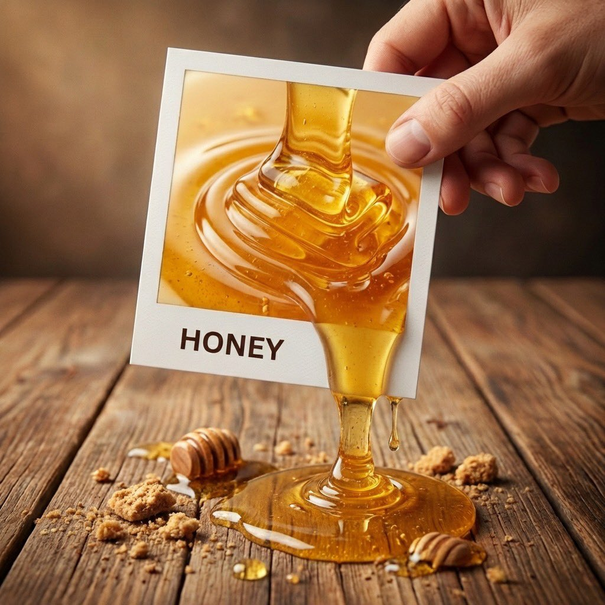
案例1262: A hyper realistic 3D photo concept showing a hand holding a s...
A hyper realistic 3D photo concept showing a hand holding a square polaroid photo labeled “[ELEMENT]”. Inside the pho...
🎨 查看AI提示词
🇨🇳 中文提示词
一个超写实的3D照片概念，展示一只手拿着一张方形的宝丽来照片，上面标有“[ELEMENT]”。照片内部是[ELEMENT]的特写，并从照片框架无缝延伸到现实世界，与下面的表面自然互动。照片的白边上整齐印有“[ELEMENT]”文本。真实的电影级照明、极致细节纹理、富有艺术性的构图。
🇬🇧 English Prompt
A hyper-realistic 3D photo concept showing a hand holding a square polaroid photo labeled “[ELEMENT]”. Inside the photo, there’s a close-up of [ELEMENT], and it flows seamlessly out of the photo frame...
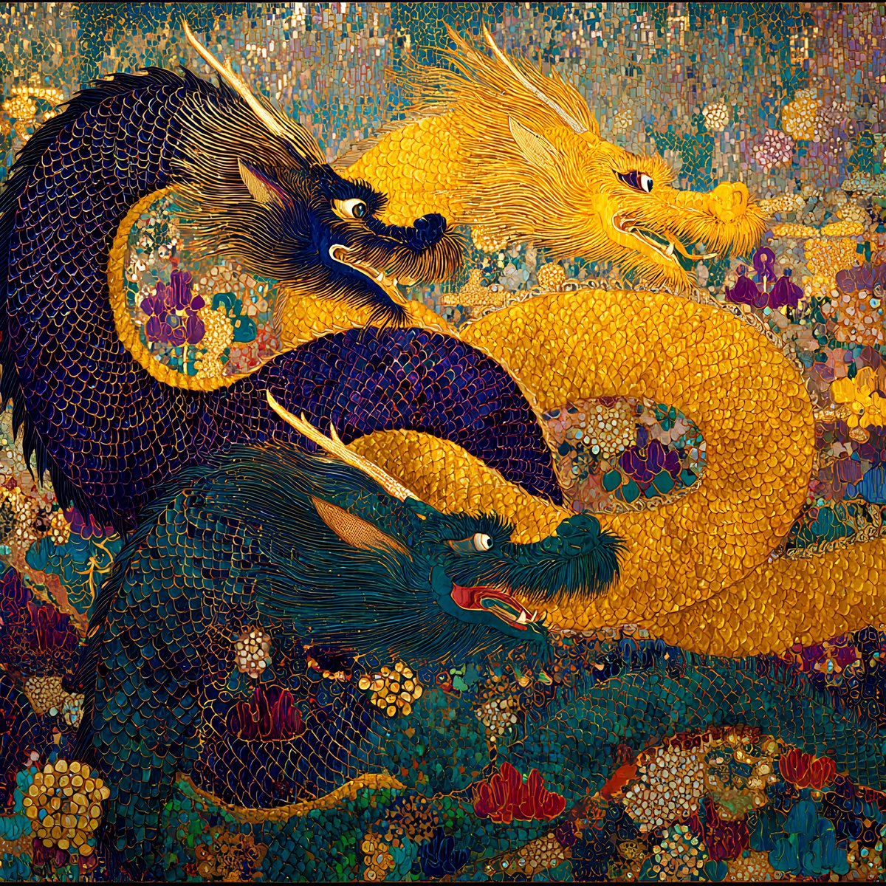
案例1250: Happy Dragon Day! 🐉🎉
Happy Dragon Day! 🐉🎉 Midjourney on @Somake ai https://t.co/vTQcrfaE03
🎨 查看AI提示词
🇨🇳 中文提示词
龙日快乐！🐉🎉 Midjourney 在 @Somake_ai 上 https://t.co/vTQcrfaE03
🇬🇧 English Prompt
Happy Dragon Day! 🐉🎉 Midjourney on @Somake_ai https://t.co/vTQcrfaE03
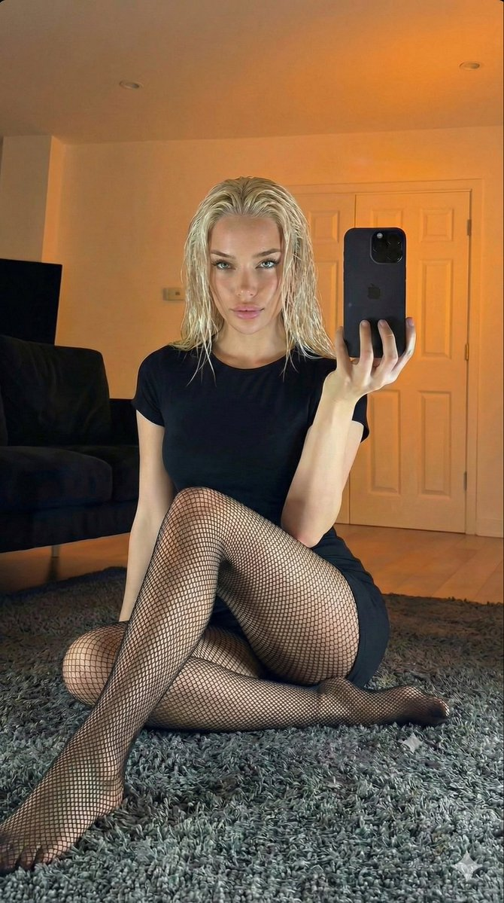
案例1237: "meta": {
{ "meta": { "aspect ratio": "9:16", "quality": "photorealistic, raw, unedited smartphone photograph", "resolution": "...
🎨 查看AI提示词
🇨🇳 中文提示词
{ "元数据": { "纵横比": "9:16", "质量": "照片写实、原始、未编辑的智能手机照片", "分辨率": "8k", "相机": "智能手机相机（例如 iPhone 14 Pro）", "镜头": "广角智能手机镜头", "风格": "抓拍镜子自拍，自然室内夜晚光线，暖色调", "构图": "坐在地毯上的女性全身镜像，手持...
🇬🇧 English Prompt
{ "meta": { "aspect_ratio": "9:16", "quality": "photorealistic, raw, unedited smartphone photograph", "resolution": "8k", "camera": "Smartphone camera (e.g., iPhone 14 Pro)", "le...
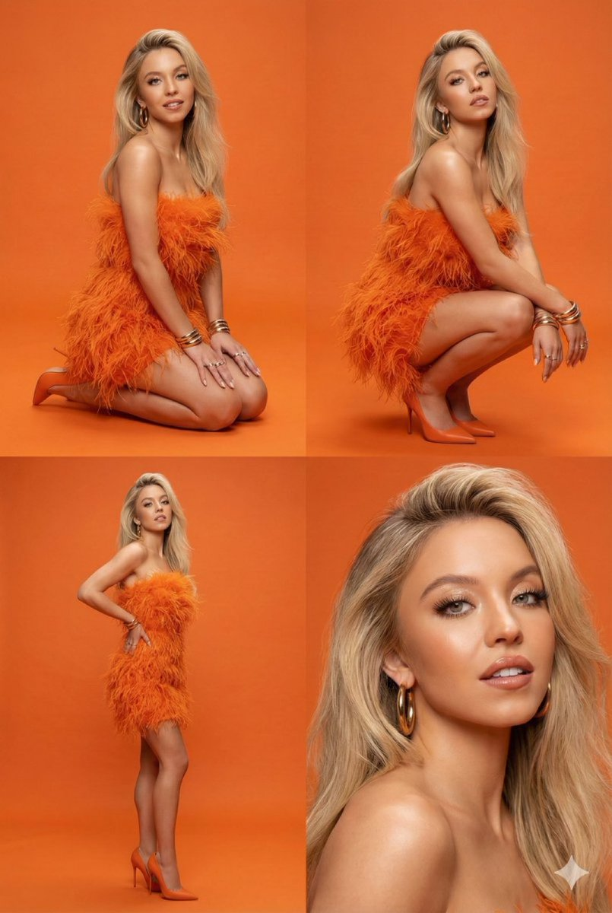
案例1234: "project meta": {
{ "project meta": { "title": "Monochromatic Orange High Fashion Editorial", "style": "Ultra photorealistic, 8K, luxur...
🎨 查看AI提示词
🇨🇳 中文提示词
{ "项目元数据": { "标题": "单色橙色高级时尚写真", "风格": "超写实，8K，奢华杂志审美", "氛围": "大胆、迷人、自信、诱惑" }, "环境": { "场景": "极简专业摄影棚", "背景": "纯色无缝生动橙色背景与地面", "道具": "无（干净表面）", "灯光": "柔和正面主光，暖色校准，可控阴...
🇬🇧 English Prompt
{ "project_meta": { "title": "Monochromatic Orange High-Fashion Editorial", "style": "Ultra-photorealistic, 8K, luxury magazine aesthetic", "mood": "Bold, glamorous, confident, seductive...
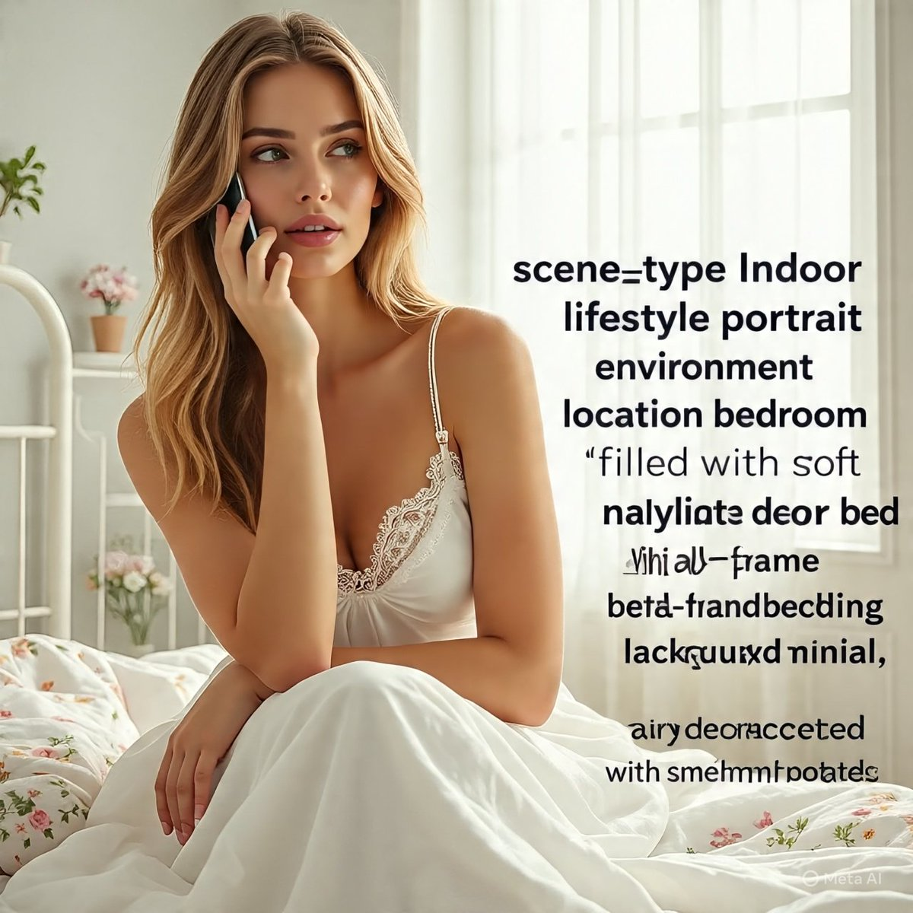
案例1230: "scene type": "Indoor lifestyle portrait",
{ "scene type": "Indoor lifestyle portrait", "environment": { "location": "Sunlit bedroom filled with soft natural da...
🎨 查看AI提示词
🇨🇳 中文提示词
{ "场景类型": "室内生活方式肖像", "环境": { "位置": "阳光照射的卧室，充满柔和的自然日光", "背景": { "床": "白色金属床架，铺有精致花卉图案床品", "装饰": "极简、通透的装饰，点缀着小型盆栽和细腻的花卉细节", "窗户": "大窗户配薄纱白色窗帘，柔化进来的阳光", "色彩方案": "浅白...
🇬🇧 English Prompt
{ "scene_type": "Indoor lifestyle portrait", "environment": { "location": "Sunlit bedroom filled with soft natural daylight", "background": { "bed": "White metal-frame bed dressed wi...
案例1225: A hyper realistic, ultra detailed 8K cinematic photograph cap...
A hyper realistic, ultra detailed 8K cinematic photograph captured with a 35mm lens, medium wide shot, set inside a r...
🎨 查看AI提示词
🇨🇳 中文提示词
一张超写实、极其细致的 8K 电影级照片，使用 35mm 镜头拍摄，中等广角镜头，场景设定在一间真实、现代的公寓客厅，具有自然、有人居住的家庭氛围。 场景逻辑与构图： 电视放置在玩家正前方，位于相机画面之外。 墙上有一面大型装饰镜，微妙地反射出电视屏幕，清晰显示决赛结果。 在镜中反射里，足球电子游戏的结果画面显示了碾压性的比分：10 – 0，明显有利于主角。 数字粗体、明亮且无可辩认，与绿色球...
🇬🇧 English Prompt
A hyper-realistic, ultra-detailed 8K cinematic photograph captured with a 35mm lens, medium-wide shot, set inside a realistic, modern apartment living room with a natural, lived-in home atmosphere. S...
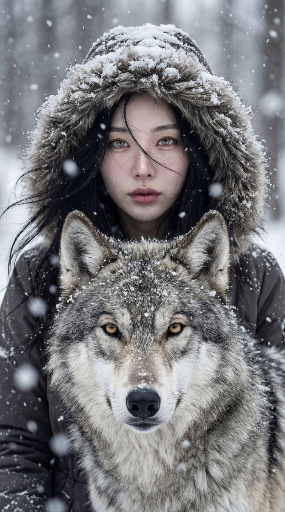
案例1224: "Objective": "Create a breathtaking cinematic winter portrait...
{ "Objective": "Create a breathtaking cinematic winter portrait depicting a deep, primal bond between a woman and a w...
🎨 查看AI提示词
🇨🇳 中文提示词
{ "目标": "创建一幅令人惊叹的电影感冬日肖像，描绘一位女性与一只狼之间深沉、原始的纽带", "人物详情": { "人类主体": { "类型": "年轻女性", "位置": "紧贴站在狼的身后", "表情": "强烈、平静、富有灵魂", "目光": "与相机直接对视", "皮肤": { "色调": "苍...
🇬🇧 English Prompt
{ "Objective": "Create a breathtaking cinematic winter portrait depicting a deep, primal bond between a woman and a wolf", "PersonaDetails": { "HumanSubject": { "Type": "Young woman", ...
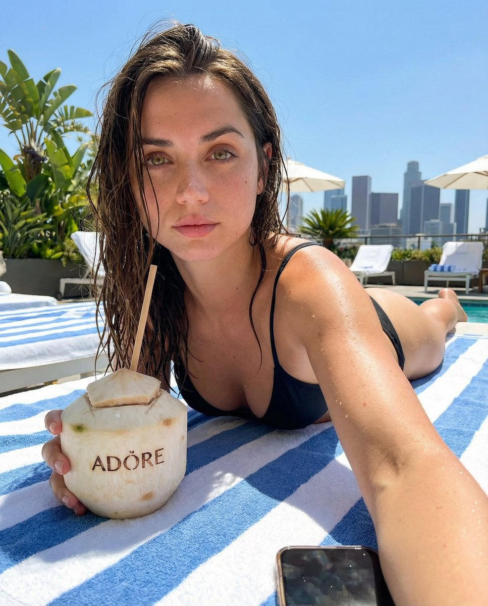
案例1222: "title": "LA Rooftop Poolside Selfie",
{ "title": "LA Rooftop Poolside Selfie", "style attributes": [ "Ultra realistic cinematic lifestyle photography", "8K...
🎨 查看AI提示词
🇨🇳 中文提示词
{ "title": "洛杉矶屋顶泳池自拍", "style_attributes": [ "超写实电影风格生活方式摄影", "8K 分辨率", "超高细节", "照片级真实", "iPhone 风格的随意拍摄", "电影质感的摄影质量" ], "subject": { "demog...
🇬🇧 English Prompt
{ "title": "LA Rooftop Poolside Selfie", "style_attributes": [ "Ultra-realistic cinematic lifestyle photography", "8K resolution", "Hyper-detailed", "Photorealistic", ...
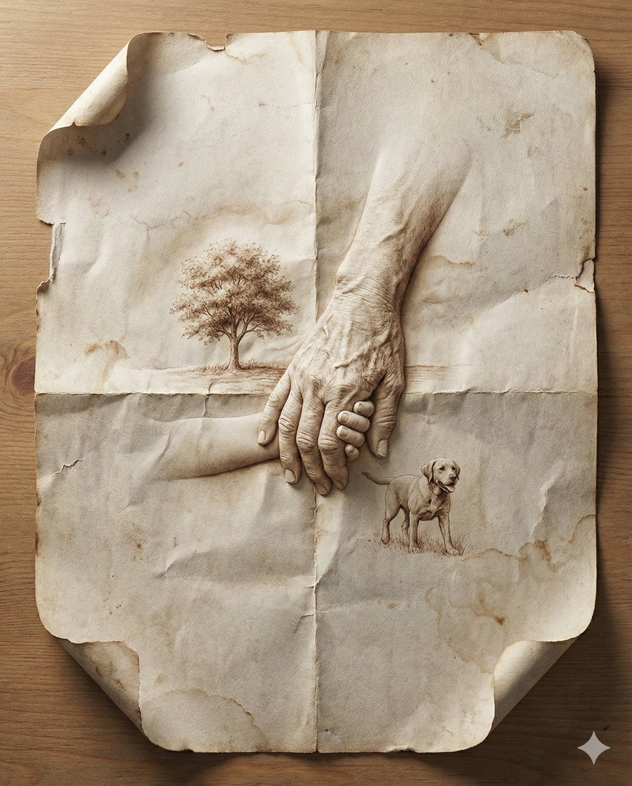
案例1218: 8K Ultra Realistic Promotional
8K Ultra Realistic Promotional Design a hyper realistic close up image of a folded sheet of aged paper. Within the pa...
🎨 查看AI提示词
🇨🇳 中文提示词
8K 超真实宣传 设计一幅对折陈旧纸张的超逼真特写图像。在纸张的折痕和表面中，描绘一个 [场景或记忆] 自然地从褶皱中浮现，像雕刻般的折纸。 环境和人物（如有）看起来像是压印或直接印在纸上，利用皱纹、纸纹和墨水质感来构建这种视觉错觉。加入微妙的阴影、卷曲的边缘、撕裂的角落和墨水褪色以增强真实感。 将纸张置于中性色的桌面上，来自一侧的柔和定向光投射出轻柔的阴影并增强立体深度。 写实摄影风格、情感叙事...
🇬🇧 English Prompt
8K Ultra-Realistic Promotional Design a hyper-realistic close-up image of a folded sheet of aged paper. Within the paper’s creases and surfaces, depict a [SCENE OR MEMORY] emerging naturally from the ...
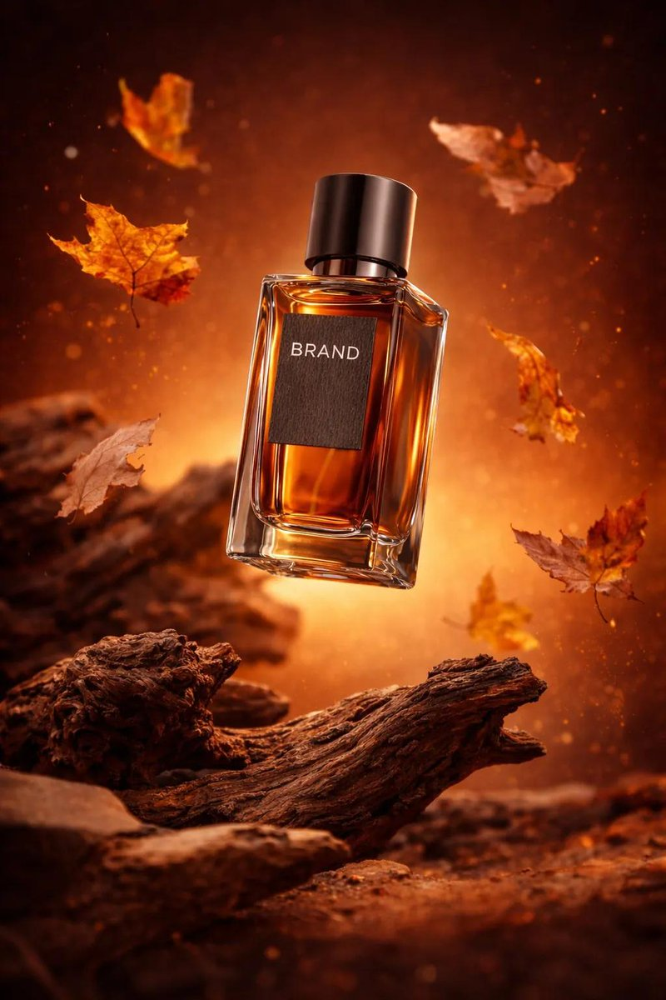
案例1214: Ultra realistic luxury perfume product shot (9: 16, 4K). A cl...
Ultra realistic luxury perfume product shot (9: 16, 4K). A clear rectangular glass perfume bottle with warm amber liq...
🎨 查看AI提示词
🇨🇳 中文提示词
超真实的奢华香水产品拍摄（9:16，4K）。一个透明的矩形玻璃香水瓶，内含温暖的琥珀色液体，配金属盖，悬浮在空中，位于粗糙的漂流木/树根之上。秋叶在周围旋动，伴随柔和粒子效果，背景为温暖的橙棕渐变，带有电影感的辉光。工作室级照明（柔光主灯+轮廓灯），清晰的反射，标签清晰地写着[BRAND]，浅景深，高端商业后期处理，戏剧性的散景，无额外文字，无水印。
🇬🇧 English Prompt
Ultra-realistic luxury perfume product shot (9: 16, 4K). A clear rectangular glass perfume bottle with warm amber liquid and a metallic cap, floating mid-air above rugged driftwood/roots. Autumn leave...
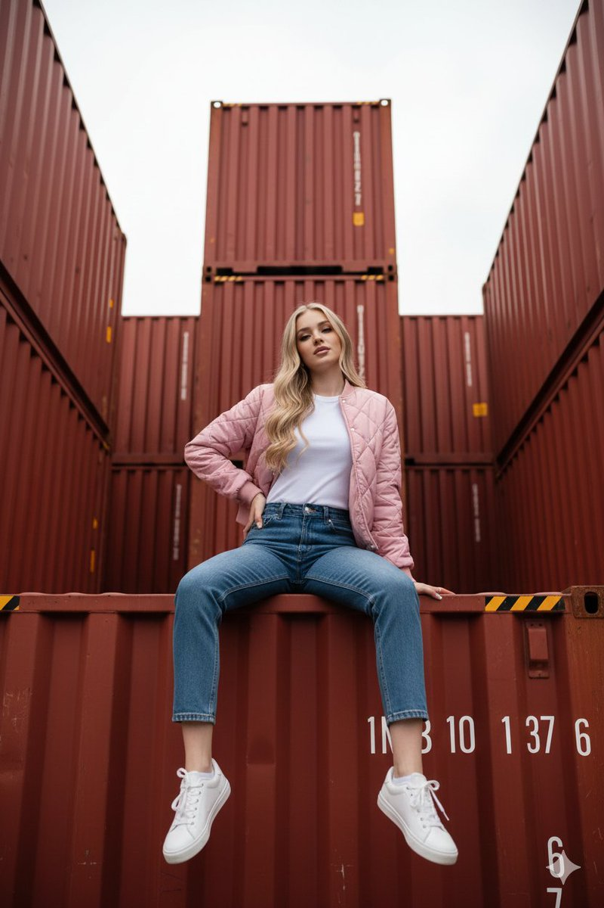
案例1211: Use the same face from the reference image without changing f...
Use the same face from the reference image without changing facial features { "image description": "A high angle, low...
🎨 查看AI提示词
🇨🇳 中文提示词
使用参考图中的相同面孔，不改变面部特征 { "image_description": "高视角、低透视的全身肖像，一位金发的年轻西方女性坐在红色工业集装箱的边缘。", "subject": { "person": "年轻西方女性，健美身材，严肃表情，目光看向远方而非镜头。", "hair_style": "长金发", "clothing": { "ja...
🇬🇧 English Prompt
Use the same face from the reference image without changing facial features { "image_description": "A high-angle, low-perspective full-body portrait of a young western woman with blonde hair sitti...
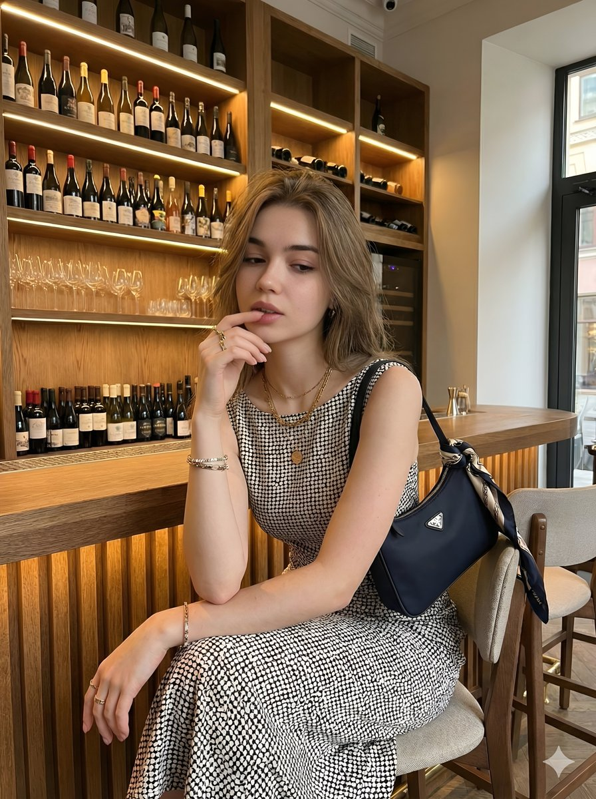
案例1208: Young beautiful woman with long wavy hair, elegant sleeveless...
Young beautiful woman with long wavy hair, elegant sleeveless polka dot midi dress black and white pattern, sitting t...
🎨 查看AI提示词
🇨🇳 中文提示词
年轻漂亮的女子，长卷发，优雅的无袖波点中长连衣裙（黑白图案），若有所思地坐在时尚的酒吧吧台旁，手靠近嘴唇，背景为豪华酒瓶陈列墙，普拉达藏青色迷你包搭配丝巾，金色首饰，精致时髦的氛围，柔和温暖的灯光，电影感，高度细节化，写实 仅使用我上传的面部图像作为唯一的面部和身份参考。不允许使用任何其他面孔、模特、数据集或参考资料。
🇬🇧 English Prompt
Young beautiful woman with long wavy hair, elegant sleeveless polka dot midi dress black and white pattern, sitting thoughtfully at stylish wine bar counter, hand near lips, luxury wine bottles wall b...

案例1207: "content goal": "viral food visual with extreme craving appeal",
{ "content goal": "viral food visual with extreme craving appeal", "image type": "ultra photorealistic food action ph...
🎨 查看AI提示词
🇨🇳 中文提示词
{ "content_goal": "具有极强诱惑力、易传播的食物视觉", "image_type": "超写实食物动作摄影", "visual_style": { "aesthetic": "电影感美食编辑风格，超真实", "vibe": "多汁、奢华、不可抗拒", "realism": "高端商业美食真实感" }, "composition": { ...
🇬🇧 English Prompt
{ "content_goal": "viral food visual with extreme craving appeal", "image_type": "ultra-photorealistic food action photography", "visual_style": { "aesthetic": "cinematic food editorial, hyp...
案例1204: ultra realistic studio portrait
ultra realistic studio portrait Create an ultra realistic, high end professional studio portrait of one adult subject...
🎨 查看AI提示词
🇨🇳 中文提示词
超写实工作室肖像 创建一张超写实、高端专业的工作室肖像，主体为一名成年人，造型为干净、现代、行政风格的时尚美学。 主体坐在一个简单的白色方块上，身体略微朝向相机，坐姿挺直但放松。双手轻轻交叠，自然放在腿上。表情自信、温暖且沉稳，带有细微的职业式微笑。 整体氛围：精致、优雅、现代、值得信赖——仅限纯写实。 无风格化处理、无电影效果、无美颜滤镜、无夸张。 服装与造型 • 挺括的白色定制西装外...
🇬🇧 English Prompt
ultra realistic studio portrait Create an ultra-realistic, high-end professional studio portrait of one adult subject, styled in a clean, modern, executive fashion aesthetic. The subject is seated o...
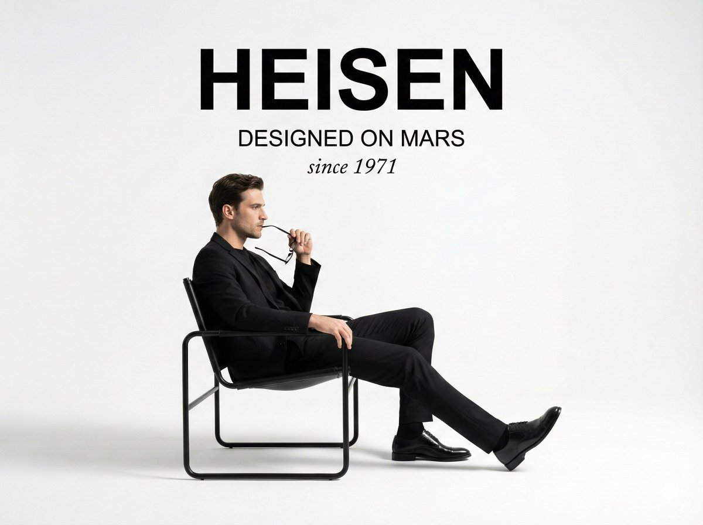
案例1198: A minimalist studio photograph fashion ad. At the top center,...
A minimalist studio photograph fashion ad. At the top center, the bold sans serif text "[TEXT]" is positioned above t...
🎨 查看AI提示词
🇨🇳 中文提示词
一个极简主义的摄影时尚广告。顶部中央，粗体无衬线字体的“[TEXT]”位于较小的无衬线字体“[TEXT]”之上，而该较小文字又位于斜体手写体“[TEXT]”之上。文字下方，一名穿着黑色西装、黑色T恤和擦亮的黑色皮鞋的男子以侧面坐着，面向左侧。他坐在一把现代椅子上，椅面和靠背为黑色皮革，悬挂在圆管黑色金属框架上。他的右腿伸直，右手拿着一副眼镜靠近嘴边。背景和地板为无缝的纯白影棚空间，柔和的漫散光在男...
🇬🇧 English Prompt
A minimalist studio photograph fashion ad. At the top center, the bold sans-serif text "[TEXT]" is positioned above the smaller sans-serif text "[TEXT]", which is above the italic script text "[TEXT]"...
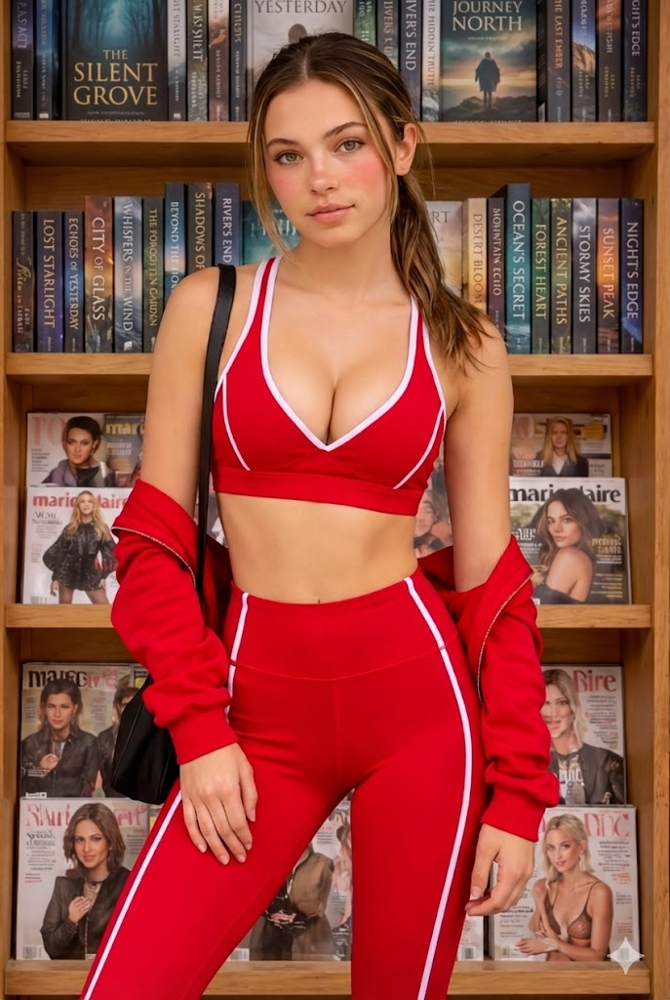
案例1197: "prompt type": "photorealistic image generation",
{ "prompt type": "photorealistic image generation", "subject": { "gender": "female", "age": 18, "ethnicity appearance...
🎨 查看AI提示词
🇨🇳 中文提示词
{ "prompt_type": "照片写实图像生成", "subject": { "gender": "女性", "age": 18, "ethnicity_appearance": "浅肤色的白人外观", "body_type": "苗条、健身型、腹部线条紧致", "pose": "直立站立，肩部放松，双臂自然下垂，一只手微微向前", "...
🇬🇧 English Prompt
{ "prompt_type": "photorealistic image generation", "subject": { "gender": "female", "age": 18, "ethnicity_appearance": "light-skinned Caucasian appearance", "body_type": "slim, at...
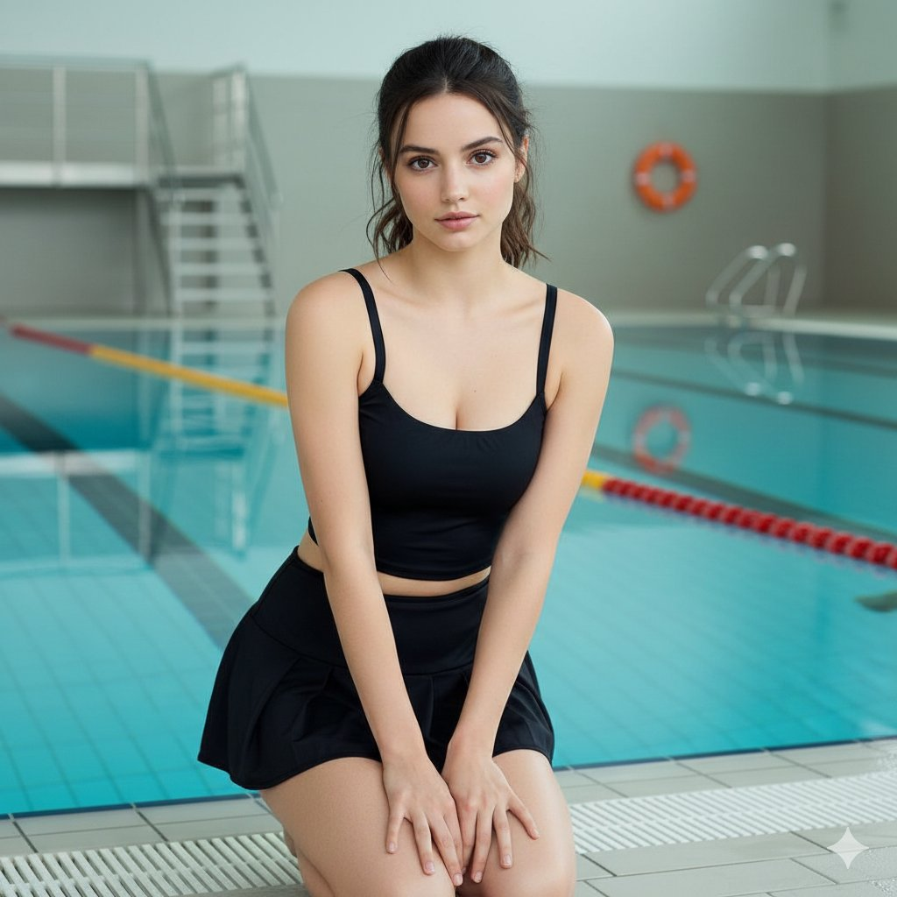
案例1196: "image properties": {
{ "image properties": { "width": 504, "height": 1002, "orientation": "vertical", "aspect ratio": "1:2" }, "subject":...
🎨 查看AI提示词
🇨🇳 中文提示词
{ "image_properties": { "width": 504, "height": 1002, "orientation": "垂直", "aspect_ratio": "1:2" }, "subject": { "identity": "长相类似安娜·德·阿玛斯（Ana de Armas）", "gender": "女性",...
🇬🇧 English Prompt
{ "image_properties": { "width": 504, "height": 1002, "orientation": "vertical", "aspect_ratio": "1:2" }, "subject": { "identity": "Ana de Armas look-alike", "gender": "f...
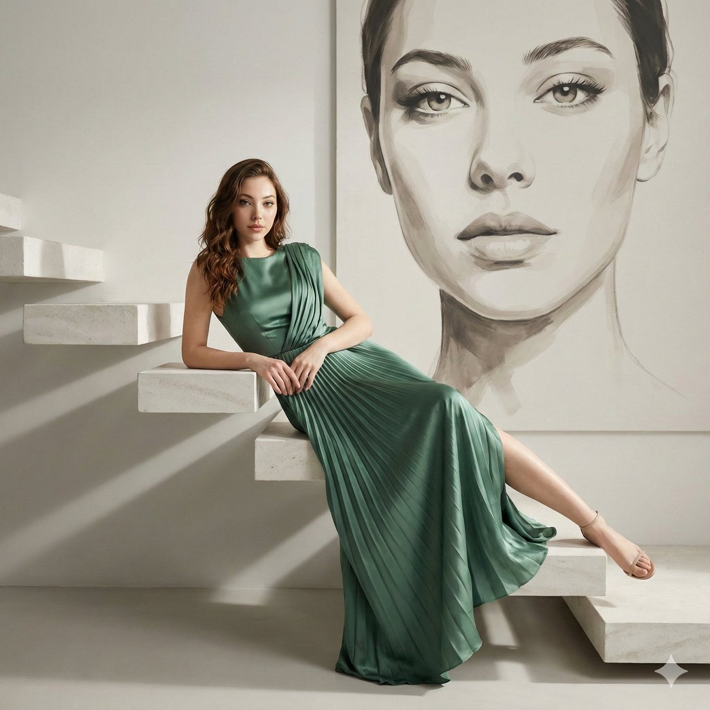
案例1195: A high fashion editorial portrait of a woman reclining elegan...
A high fashion editorial portrait of a woman reclining elegantly on floating white stone stairs inside a minimalist s...
🎨 查看AI提示词
🇨🇳 中文提示词
一张高级时尚编辑肖像，画面中一位女性优雅地斜倚在极简摄影棚内悬浮的白色石阶上。她穿着一件柔和的祖母绿缎面礼服，雕塑般的褶皱层层垂落。一条腿伸展，姿态既放松又充满掌控感。她身后是一幅大幅色调肖像，用极简的笔触表现她的面容。柔和的摄影棚光线、细腻的光影变化、精致的优雅、艺术性平衡、奢华的编辑氛围，1:1 画幅。
🇬🇧 English Prompt
A high-fashion editorial portrait of a woman reclining elegantly on floating white stone stairs inside a minimalist studio. She wears a muted emerald satin gown with sculptural pleats cascading downwa...

案例1193: Macro food photography of a crispy martabak telur tearing ope...
Macro food photography of a crispy martabak telur tearing open mid air, thin golden wrapper shattering with a crack,...
🎨 查看AI提示词
🇨🇳 中文提示词
微距美食摄影，酥脆的马塔巴鸡蛋在半空中撕开，薄薄的金色外皮伴随一声裂响破碎，热腾腾的内馅由牛肉末、葱和鸡蛋组成，向外喷薄而出。炸洋葱碎和胡椒颗粒悬浮在运动中，蒸汽可见，有光泽的油光捕捉到光线。温暖的印尼街边摊灯光，钨丝 + 炭火般的暖色调，戏剧性的轮廓光，超高纹理细节（起泡的外皮、分层的内部）。编辑级美食镜头，浅景深，夜市招牌的散景，Nikon Z9 风格，105mm 微距，快速快门定格，超真实的...
🇬🇧 English Prompt
Macro food photography of a crispy martabak telur tearing open mid-air, thin golden wrapper shattering with a crack, hot filling of minced beef, scallions, and egg bursting outward. Flecks of fried on...
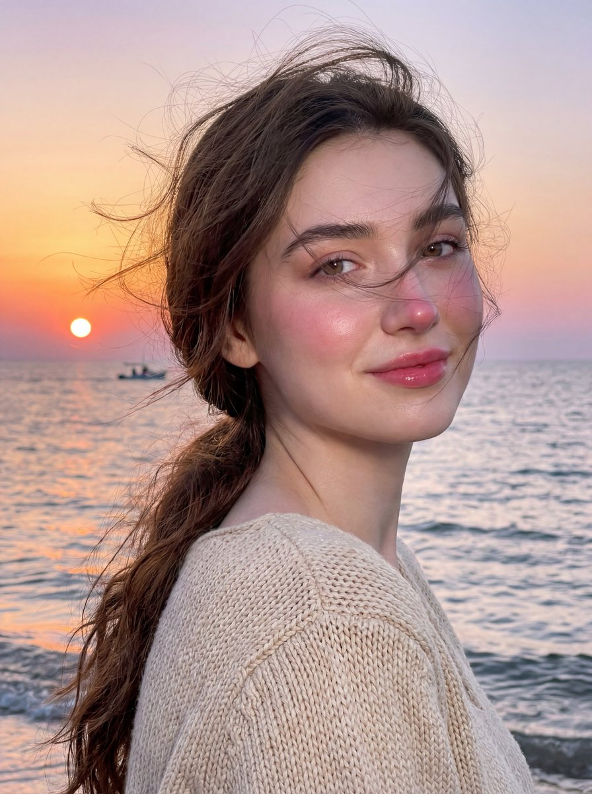
案例1192: Create an image using the exact same face as the reference im...
Create an image using the exact same face as the reference image (100% identical, no facial changes at all). A close...
🎨 查看AI提示词
🇨🇳 中文提示词
使用参考图片中完全相同的面孔来创建一张图像（100% 一模一样，面部绝对不做任何更改）。 近距离侧面特写，一位美丽可爱的年轻女性，略微侧身，轻轻将脸转向镜头，带着柔和、微妙的微笑。 妆容： 自然妆容，呈现水润光泽的肌肤效果，强调健康、透亮的肌肤质感。脸颊及鼻尖轻扫柔和的淡粉色腮红。光泽渐变粉唇，呈现丰盈、滋润的感觉。整体清新、自然、亮采（水光感）。 皮肤： 非常白皙、明亮、光滑且无瑕的肤质。 发型...
🇬🇧 English Prompt
Create an image using the exact same face as the reference image (100% identical, no facial changes at all). A close-up profile shot of a beautiful, cute young woman, standing slightly sideways and ge...
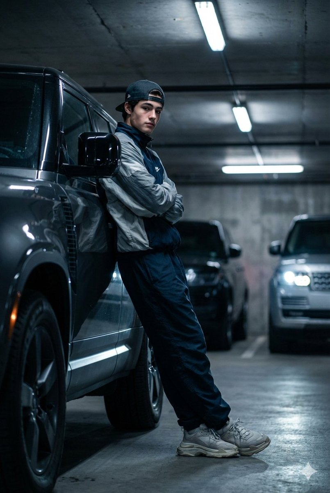
案例1187: Hyper realistic low angle closeup front shot of a young man u...
Hyper realistic low angle closeup front shot of a young man use image uploaded leaning against a Land Rover Defender...
🎨 查看AI提示词
🇨🇳 中文提示词
超写实的低角度正面近距特写，一名年轻男子（使用上传的图像）在昏暗的地下车库靠着一辆路虎卫士。 穿着超大号 Nike 防风夹克、宽松篮球裤、Adidas 厚底运动鞋、篮球帽。 双手交叉，带态度的凝视。 豪华 SUV 被柔和虚化并呈现电影感散景，浅景深，强烈的主体分离，以及 8K 电影级色彩分级。
🇬🇧 English Prompt
Hyper-realistic low-angle closeup front shot of a young man use image uploaded leaning against a Land Rover Defender in a dim basement garage. Wearing oversized Nike wind cheater, baggy basketball pa...
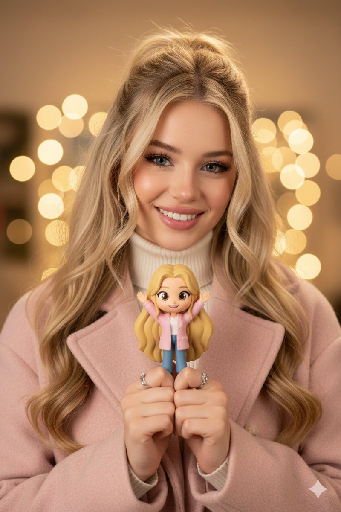
案例1185: "image description": "A high quality, cinematic portrait of a...
{ "image description": "A high quality, cinematic portrait of a beautiful young woman with long blonde hair, styled i...
🎨 查看AI提示词
🇨🇳 中文提示词
{ "图像描述": "一张高质量、电影感的肖像照：一位美丽的年轻女子，长长的金发做成半盘发造型，面带温暖微笑，手中拿着一个小型风格化的 3D 卡通人偶，正是她自己的缩小版。女子穿着浅粉色羊毛大衣，内搭白色高领毛衣。人偶完全模仿她的外貌，包括金发、粉色外套、白色上衣和蓝色牛仔裤，但以可爱的大眼睛 chibi 或受皮克斯启发的动画风格呈现，双臂欢举表达喜悦。光线柔和偏金色，营造专业影棚的散景背景，...
🇬🇧 English Prompt
{ "image_description": "A high-quality, cinematic portrait of a beautiful young woman with long blonde hair, styled in a half-updo, smiling warmly while holding a small, stylized 3D cartoon figurine...

案例1183: "model": "Nano Banana / Gemini style",
{ "model": "Nano Banana / Gemini style", "aspect ratio": "3:4", "render mode": "raw", "series": [ { "index": "1/5", "...
🎨 查看AI提示词
🇨🇳 中文提示词
{ "model": "Nano Banana / Gemini 风格", "aspect_ratio": "3:4", "render_mode": "原始", "series": [ { "index": "1/5", "prompt": "两只手把一块烤奶酪三明治拉开，融化的切达奶酪在两半之间戏剧性地拉出丝，烤面包边缘酥脆金黄，面包屑悬在半空，...
🇬🇧 English Prompt
{ "model": "Nano Banana / Gemini-style", "aspect_ratio": "3:4", "render_mode": "raw", "series": [ { "index": "1/5", "prompt": "two hands pulling apart a grilled cheese sandwich...
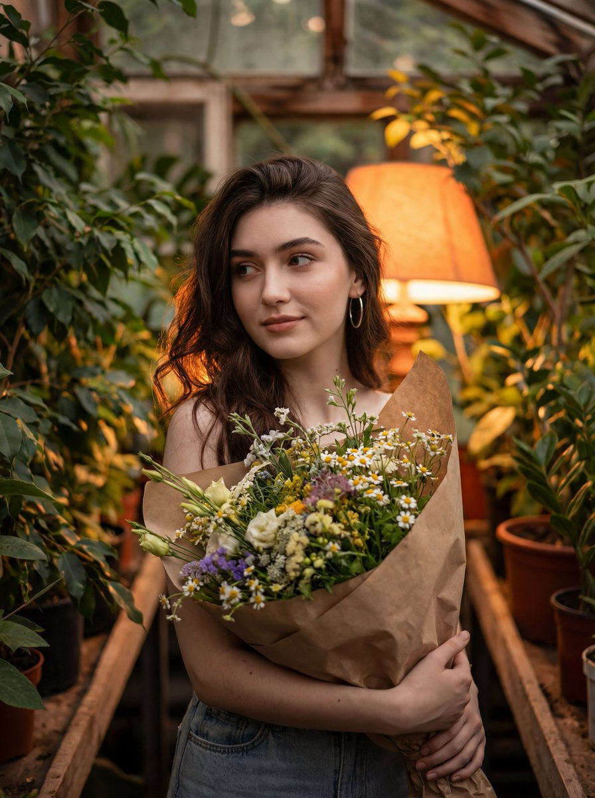
案例1179: Use the uploaded image as a reference for the character. Crea...
Use the uploaded image as a reference for the character. Create a sweet, cute, youthful looking girl with a relaxed,...
🎨 查看AI提示词
🇨🇳 中文提示词
使用上传的图像作为角色参考。创造一个甜美、可爱、看起来年轻的女孩，姿态放松、慵懒，表情富有表现力。 她手捧一束用牛皮纸包裹的大花束，周围环绕着许多绿植。画面应具有触感、沉浸感和氛围感，带有一种超现实的精致感与微妙的运动模糊。女孩有柔软的深棕色头发，自然造型，构图呈不对称，眼神左右顾盼，发型应能增强整体情绪。她的妆容甜美自然，五官细腻且写实。 光线应柔和温暖，身后有一盏橙色灯泡柔和地散发橙光，形成细...
🇬🇧 English Prompt
Use the uploaded image as a reference for the character. Create a sweet, cute, youthful-looking girl with a relaxed, languid posture and expressive emotions. She is holding a large bouquet of flowers ...
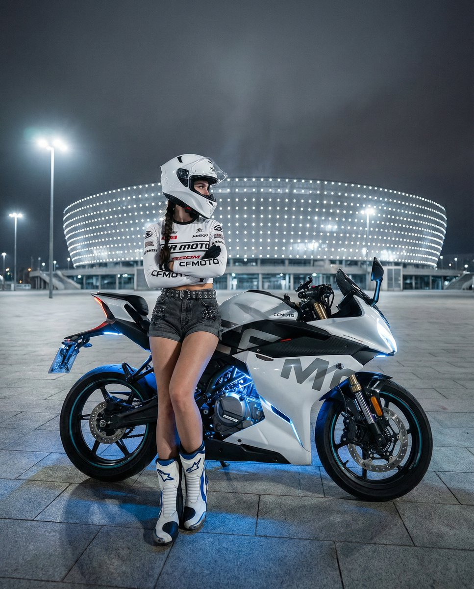
案例1172: "subject details": {
{ "subject details": { "demographics": "Female motorcyclist.", "hair": "Dark hair styled in a single braid visible ha...
🎨 查看AI提示词
🇨🇳 中文提示词
{ "subject_details": { "demographics": "女性摩托骑手。", "hair": "深色头发，扎成一条单辫，从头盔下方垂下可见。", "outfit": { "headwear": "白色全盔摩托头盔，配有黑色面罩和复杂的图案贴花。", "top": "白色长袖短款赛车运动衫/冲浪防晒衣，带有黑色和红色文字标志。...
🇬🇧 English Prompt
{ "subject_details": { "demographics": "Female motorcyclist.", "hair": "Dark hair styled in a single braid visible hanging down from the helmet.", "outfit": { "headwear": "White fu...
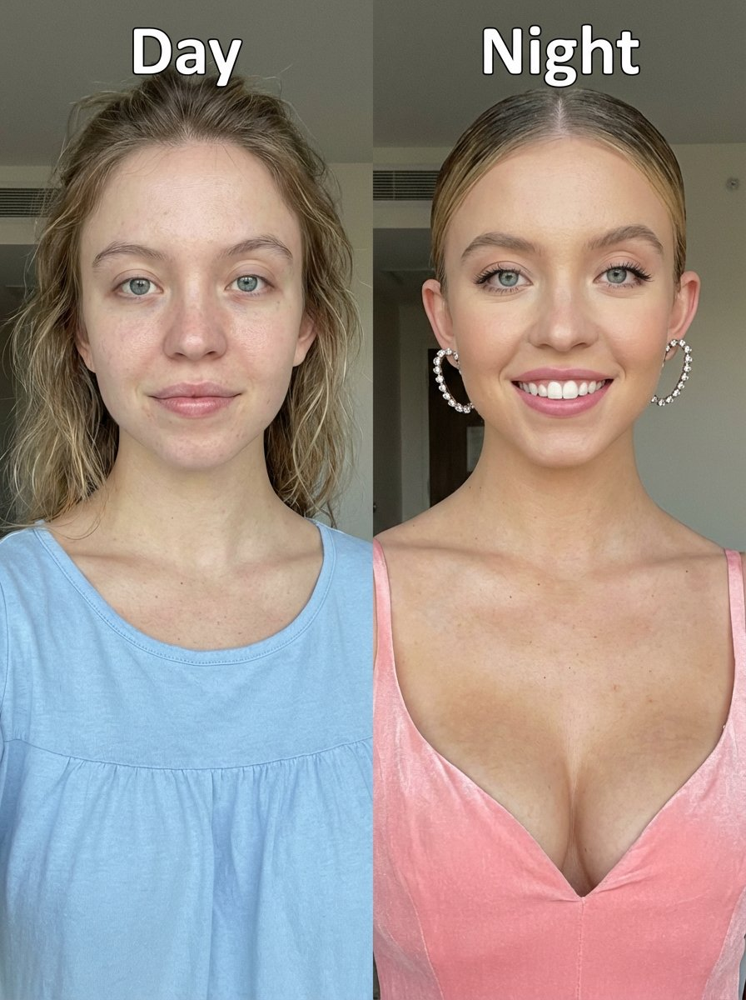
案例1167: Before and after upper body portrait photo of Sydney Sweeney,...
Before and after upper body portrait photo of Sydney Sweeney, smiling in both images, split vertically down the cente...
🎨 查看AI提示词
🇨🇳 中文提示词
悉尼·斯威尼（Sydney Sweeney）上半身前后对比人像照：两张图均带笑容，竖向从中间垂直分为两等份以便直接对比。每一半顶部都有清晰的文字标签。 左侧 – “白天”（顶部标签）： 自然无妆妆容。真实的皮肤质感，可见毛孔，轻微的黑眼圈，自然唇色，修饰很少。表情柔和、放松的微笑。头发随意造型。她穿着简单的睡裙，舒适且端庄。白天感觉，清新未修饰，真实的居家外观。 右侧 – “夜晚”（顶部标签）...
🇬🇧 English Prompt
Before-and-after upper-body portrait photo of Sydney Sweeney, smiling in both images, split vertically down the center into two equal halves for a direct visual comparison. Clear text labels appear at...
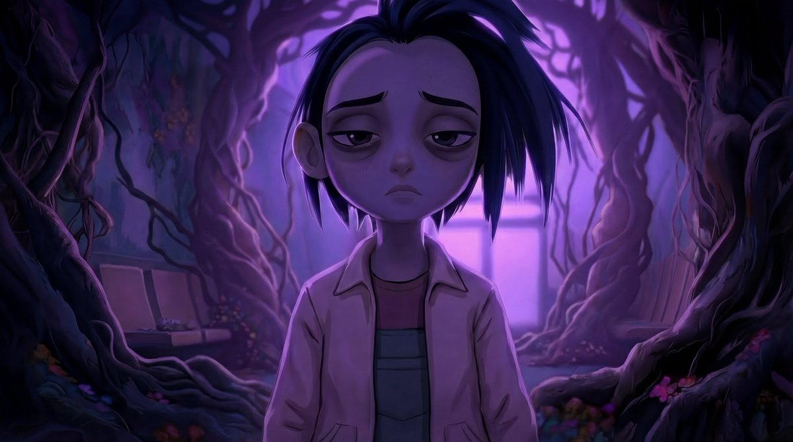
案例1162: Three useful words in Nano Banana Pro:
Three useful words in Nano Banana Pro: “MATCH THE LIGHTING” I have been using this constantly since it launched. If I...
🎨 查看AI提示词
🇨🇳 中文提示词
Nano Banana Pro 中的三个有用词： “匹配光线” 自从它发布以来我一直在不断使用它。如果我想重新照明一个镜头并将角色融入不同的环境，我只需提供另一张图片作为参考，并要求 Nano Banana Pro 去匹配那第二个镜头的光线。 它强大的地方在于它不仅仅是重新照明。它经常会从参考图中带回细微的环境提示。例如，在有雪的参考图中，雪的痕迹可以自然而然地在场景中重新出现。 如果需要...
🇬🇧 English Prompt
Three useful words in Nano Banana Pro: “MATCH THE LIGHTING” I have been using this constantly since it launched. If I want to relight a shot and integrate the character in a different environment, ...
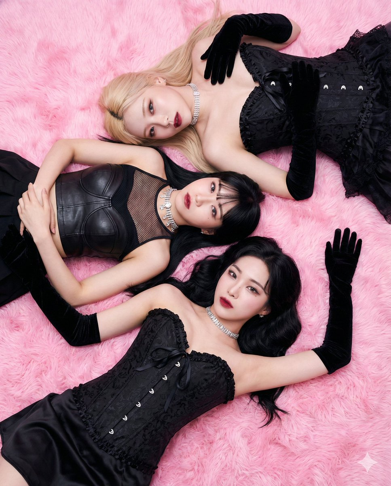
案例1160: "scene description": "Three young women lying down on a textu...
{ "scene description": "Three young women lying down on a textured surface. The bodies are intertwined in a triangula...
🎨 查看AI提示词
🇨🇳 中文提示词
{ "场景描述": "三位年轻女性躺在有纹理的表面上。身体交错，呈三角形构图。", "背景": "豪华、高毛绒度的亮粉色人造毛皮地毯或布料。", "主体细节": { "人物属性": "三位年轻的亚洲女性（K-pop 偶像美学），白皙肤色。", "造型主题": "哥特洛丽塔 / 暗黑俏皮 / 黑配粉。", "化妆": "三人统一：深红渐变唇、柔和烟熏眼妆、轮廓分明...
🇬🇧 English Prompt
{ "scene_description": "Three young women lying down on a textured surface. The bodies are intertwined in a triangular composition.", "background": "Plush, high-pile bright pink faux fur rug or fa...
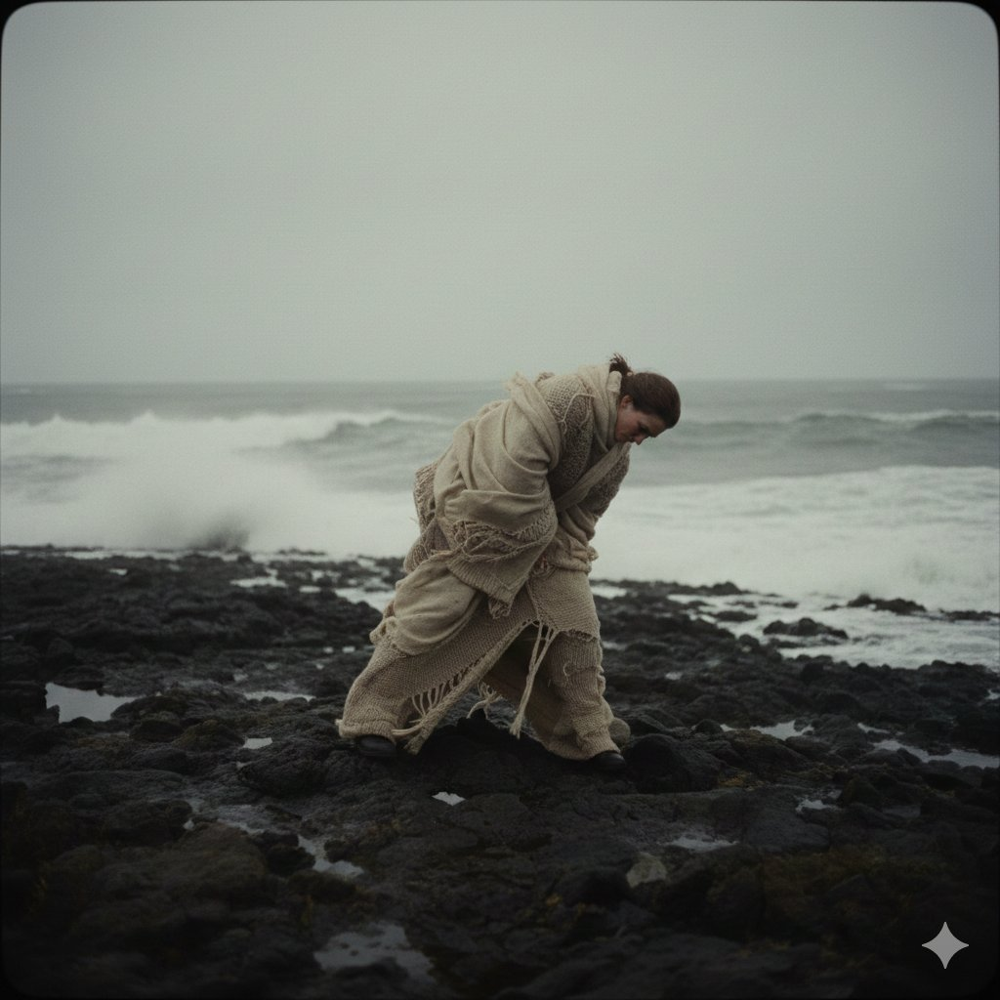
案例1158: Sometimes I want to stay alone away from the Chaos of City life
Sometimes I want to stay alone away from the Chaos of City life The Realism by gemini nano banana Prompt 👇 Wide shot...
🎨 查看AI提示词
🇨🇳 中文提示词
有时候我想独自远离城市生活的喧嚣 写实 by gemini nano banana 提示 👇 广角镜头，主体充当对抗狂风的锚。站在锯齿状的黑色岩石海岸线上，身后海浪在灰色的模糊中拍打。主体迎风前倾。服装是由一层层巨大的、无定形的原米色羊毛和做旧针织品构成，形成看起来像被侵蚀的雕塑般的轮廓。光线阴沉、平坦且情绪化。色彩去饱和、沉静的土色调、织物上清晰的纹理、电影级变形镜头。 负面提示：阳光沙...
🇬🇧 English Prompt
Sometimes I want to stay alone away from the Chaos of City life The Realism by gemini nano banana Prompt 👇 Wide shot, subject acts as an anchor against a raging wind. Standing on a jagged black r...
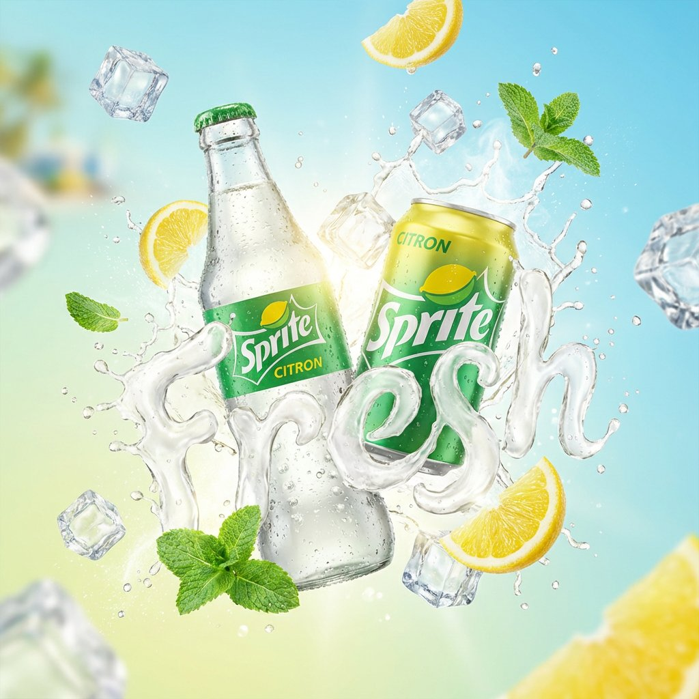
案例1154: A vibrant, high end advertising visual of a [PRODUCT NAME] ca...
A vibrant, high end advertising visual of a [PRODUCT NAME] can/bottle floating dynamically in the center. The backgro...
🎨 查看AI提示词
🇨🇳 中文提示词
一个充满活力且高端的广告视觉，中心动态漂浮着一罐/一瓶[PRODUCT NAME]。背景是受饮料颜色启发的柔和渐变，过渡到清新的天蓝色调，营造出清爽的夏日感觉。一道强劲的[LIQUID TYPE]在产品周围爆发飞溅，以平滑、流动、有机的液体字形拼出“[WORD]”。晶莹剔透的冰块在构图周围炸裂，伴随着新鲜的[FRUITS RELATED TO THE DRINK]（整体与切片）在空中飞舞。多汁的飞...
🇬🇧 English Prompt
A vibrant, high-end advertising visual of a [PRODUCT NAME] can/bottle floating dynamically in the center. The background is a soft gradient inspired by the drink’s color, blending into fresh sky-blue ...
案例1153: "reference usage": {
{ "reference usage": { "use reference for": [ "pose", "framing", "camera angle", "lighting style", "background style"...
🎨 查看AI提示词
🇨🇳 中文提示词
{ "参考使用": { "用于参考": [ "姿势", "构图", "相机角度", "灯光风格", "背景风格", "整体构图" ], "不复制": [ "脸部", "面部结构", "身份", "名人相似度" ] }, "场景": { ...
🇬🇧 English Prompt
{ "reference_usage": { "use_reference_for": [ "pose", "framing", "camera_angle", "lighting_style", "background_style", "overall_composition" ], "do_no...
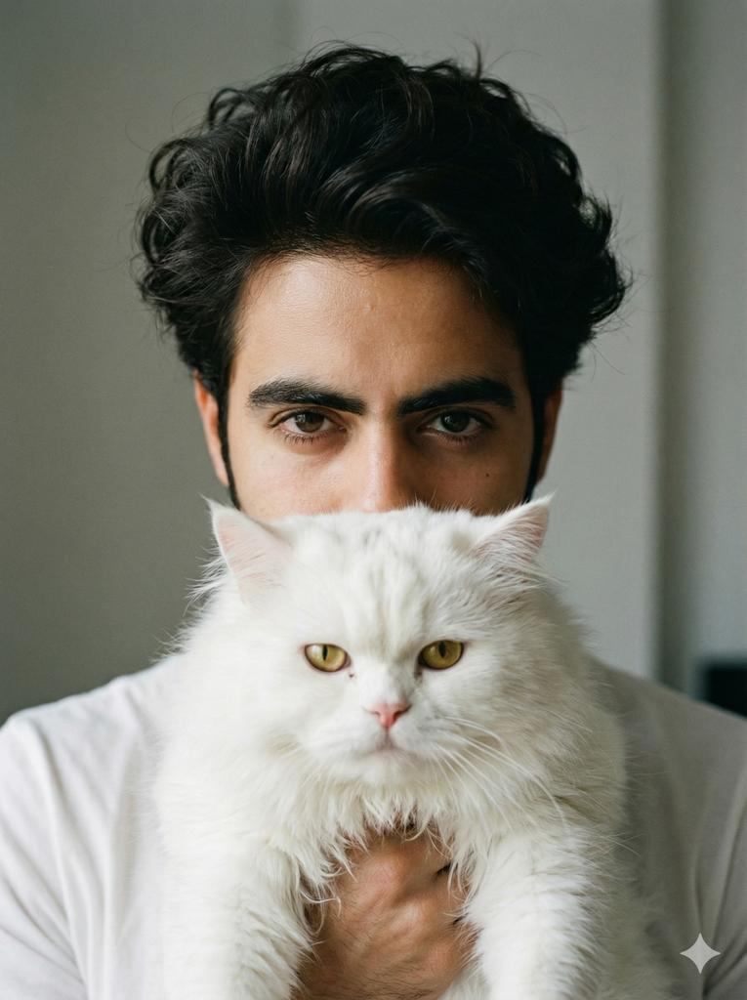
案例1151: Close up portrait of a young man Noor with long messy, volumi...
Close up portrait of a young man Noor with long messy, voluminous dark hair, holding a fluffy white Persian cat in fr...
🎨 查看AI提示词
🇨🇳 中文提示词
年轻男子 Noor 的特写肖像，长而凌乱、蓬松的深色头发，他将一只蓬松的白色波斯猫举在脸前。猫有明亮的金色眼睛和柔软的粉色鼻子，自信地望向远方。背景简约，室内光线柔和，墙面色调中性。男子深邃的目光从猫头上方若隐若现，营造出平静却引人入胜的构图。温馨自然的氛围。
🇬🇧 English Prompt
Close-up portrait of a young man Noor with long messy, voluminous dark hair, holding a fluffy white Persian cat in front of his face. The cat has bright golden eyes and a soft pink nose, looking conf...
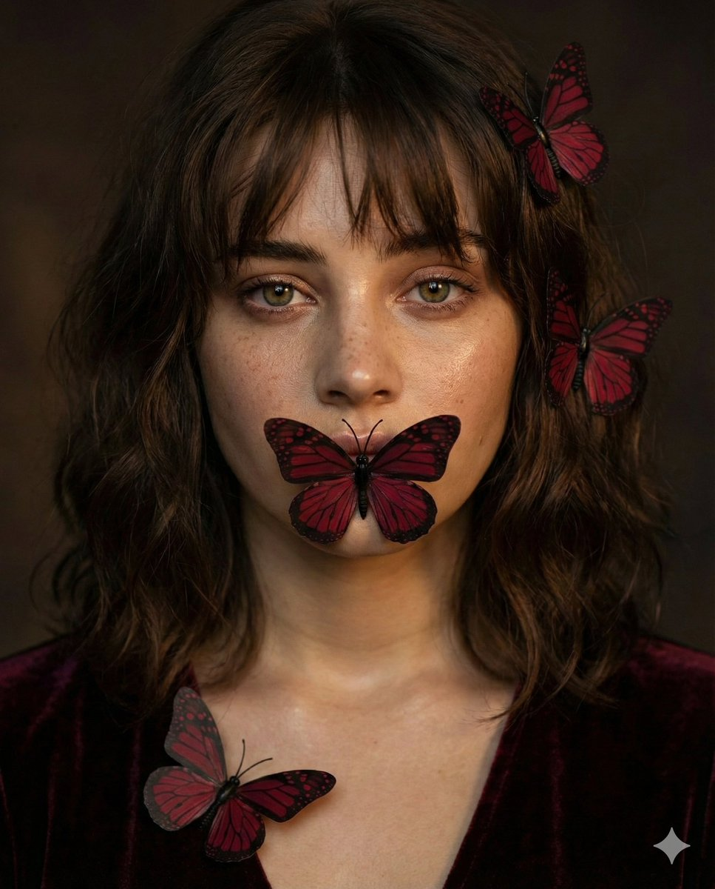
案例1150: "subject": {
{ "subject": { "type": "Woman", "age": "Young adult", "appearance": { "hair": { "color": "Dark brown", "style": "Medi...
🎨 查看AI提示词
🇨🇳 中文提示词
{ "subject": { "type": "女性", "age": "年轻成年女性", "appearance": { "hair": { "color": "深棕色", "style": "中等长度，带有凌乱的刘海", "texture": "波浪状" }, "eyes": { ...
🇬🇧 English Prompt
{ "subject": { "type": "Woman", "age": "Young adult", "appearance": { "hair": { "color": "Dark brown", "style": "Medium length, with messy bangs", "texture"...
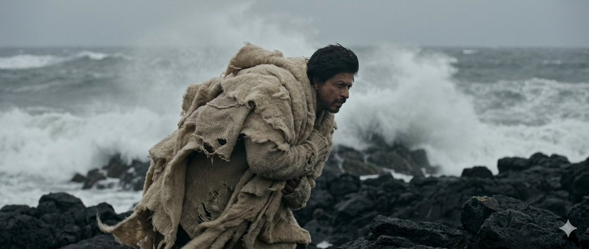
案例1149: Wide shot, subject acts as an anchor against a raging wind. S...
Wide shot, subject acts as an anchor against a raging wind. Standing on a jagged black rock coastline, waves crashing...
🎨 查看AI提示词
🇨🇳 中文提示词
远景镜头，主体作为对抗狂风的锚点。站在锯齿状的黑色岩石海岸上，身后是拍打的海浪，呈灰色模糊。主体迎风前倾。服装是笨重、无定形的粗糙米色羊毛层叠与做旧针织品，形成宛如风化雕塑的轮廓。光线阴沉、平坦且富有情绪感。去饱和的色调、低饱和的大地色系、布料上清晰的质感、电影感变形镜头。保持面部特征与所附图片完全一致。 否定提示：阳光沙滩、度假氛围、泳装、微笑、蓝天、鲜艳色彩、平静的海面、普通旅游摄影、面部畸变...
🇬🇧 English Prompt
Wide shot, subject acts as an anchor against a raging wind. Standing on a jagged black rock coastline, waves crashing behind in a gray blur. The subject leans forward against the gale. Outfit is a mas...
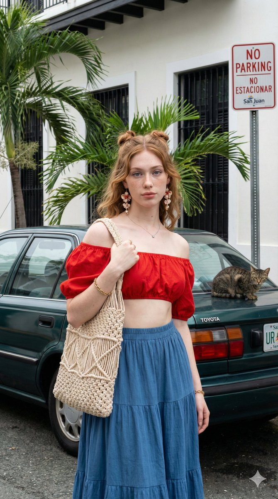
案例1143: "prompt configuration": {
{ "prompt configuration": { "aspect ratio": "9:16", "quality settings": { "resolution": "4k", "definition": "Ultra HD...
🎨 查看AI提示词
🇨🇳 中文提示词
{ "prompt_configuration": { "aspect_ratio": "9:16", "quality_settings": { "resolution": "4k", "definition": "Ultra HD", "style": "照片写实", "lighting": "自然日光，柔和阴影", ...
🇬🇧 English Prompt
{ "prompt_configuration": { "aspect_ratio": "9:16", "quality_settings": { "resolution": "4k", "definition": "Ultra HD", "style": "Photorealistic", "lighting": "Natura...
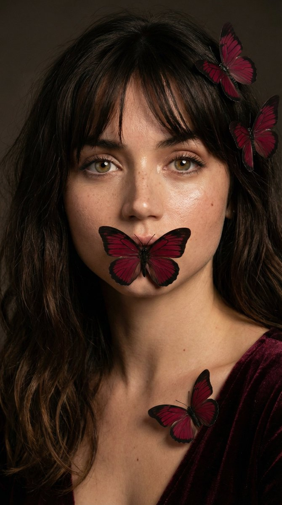
案例1142: "subject": {
{ "subject": { "type": "Woman", "age": "Young adult", "appearance": { "hair": { "color": "Dark brown", "style": "Medi...
🎨 查看AI提示词
🇨🇳 中文提示词
{ "主体": { "类型": "女性", "年龄": "年轻成人", "外观": { "头发": { "颜色": "深棕色", "样式": "中长，刘海凌乱", "质地": "微卷" }, "眼睛": { "颜色": "榛色", "注视": "直视镜头"...
🇬🇧 English Prompt
{ "subject": { "type": "Woman", "age": "Young adult", "appearance": { "hair": { "color": "Dark brown", "style": "Medium length, with messy bangs", "texture"...
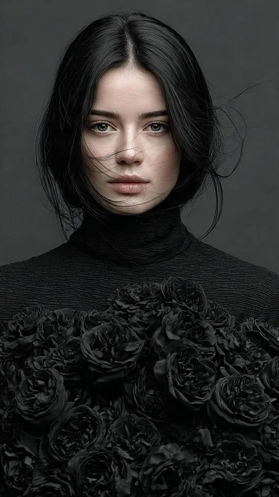
案例1139: "Objective": "Create a cinematic fine art portrait with gothi...
{ "Objective": "Create a cinematic fine art portrait with gothic elegance and high fashion editorial refinement", "Pe...
🎨 查看AI提示词
🇨🇳 中文提示词
{ "Objective": "创建一幅具有哥特优雅和高端时尚编辑精致感的电影级美术肖像", "PersonaDetails": { "Subject": { "Type": "年轻女性", "Skin": { "Tone": "苍白", "Details": "细微雀斑，保留自然皮肤质感" }, "E...
🇬🇧 English Prompt
{ "Objective": "Create a cinematic fine-art portrait with gothic elegance and high-fashion editorial refinement", "PersonaDetails": { "Subject": { "Type": "Young woman", "Skin": { ...
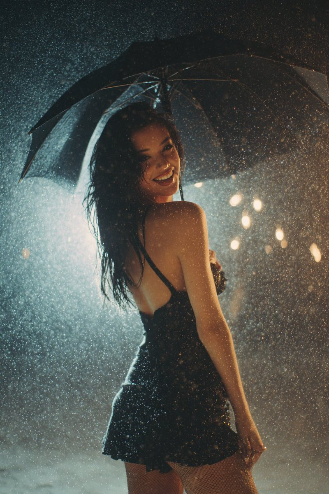
案例1138: a beautiful woman with dark hair, wearing a short skirt and a...
a beautiful woman with dark hair, wearing a short skirt and an open back top, smiling and holding an umbrella in the...
🎨 查看AI提示词
🇨🇳 中文提示词
一位拥有深色头发的美丽女性，穿着短裙和露背上衣，在夜晚的雪中微笑着撑着一把伞。这是一张宝丽来胶片风格的全身照，属于为 k hi 时尚品牌广告活动进行的实景拍摄的一部分。灯光和妆容体现了 k 的美学，正如他们的杂志封面与那种强势、高端奢华的姿态所呈现的。 --ar 85:128
🇬🇧 English Prompt
a beautiful woman with dark hair, wearing a short skirt and an open-back top, smiling and holding an umbrella in the snow at night. this is a full-body shot in the style of a polaroid film, part of a ...
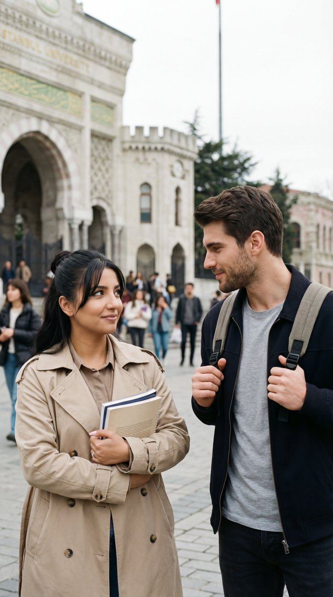
案例1135: "generation request": {
{ "generation request": { "meta data": { "tool": "NanoBanana Pro", "task type": "photoreal candid street romance", "v...
🎨 查看AI提示词
🇨🇳 中文提示词
{ "generation_request": { "meta_data": { "tool": "NanoBanana Pro", "task_type": "写实_抓拍_街头浪漫", "version": "v1.0_ISTANBUL_UNIVERSITY_FIRST_MEET_LOVE_EN", "priority": "最高" ...
🇬🇧 English Prompt
{ "generation_request": { "meta_data": { "tool": "NanoBanana Pro", "task_type": "photoreal_candid_street_romance", "version": "v1.0_ISTANBUL_UNIVERSITY_FIRST_MEET_LOVE_EN", ...
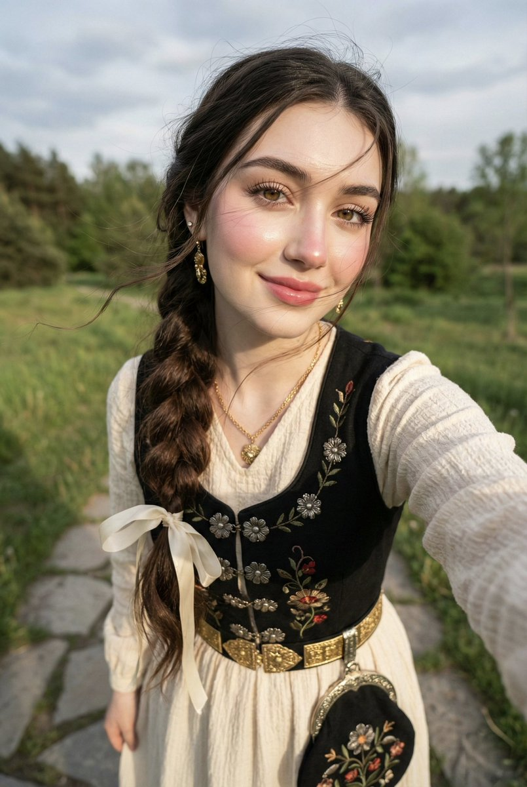
案例1133: Create an image of my face exactly as in the attached file, 1...
Create an image of my face exactly as in the attached file, 100% without any changes. A high resolution 8k image self...
🎨 查看AI提示词
🇨🇳 中文提示词
创建一张与附加文件中我的脸完全相同的图像，100% 不做任何更改。一张高分辨率 8K 的自拍，高角度拍摄一位美丽的年轻女性，头发盘成一条大而松散的辫子垂落到一侧前方，饰有奶油色丝带。她的头发看起来健康、深褐色、及腰，几缕头发吹到脸上，一些细小的碎发在风中飘动。 面部特征：大而杏仁状的浅棕色眼睛，睫毛又长又自然卷翘。妆容为水润风格，脸颊和鼻尖带有淡粉色腮红。嘴唇涂有渐变粉色唇彩，呈现饱满滋润的效果...
🇬🇧 English Prompt
Create an image of my face exactly as in the attached file, 100% without any changes. A high-resolution 8k image selfie, high angle of a beautiful young woman with her hair styled in a large, loose br...
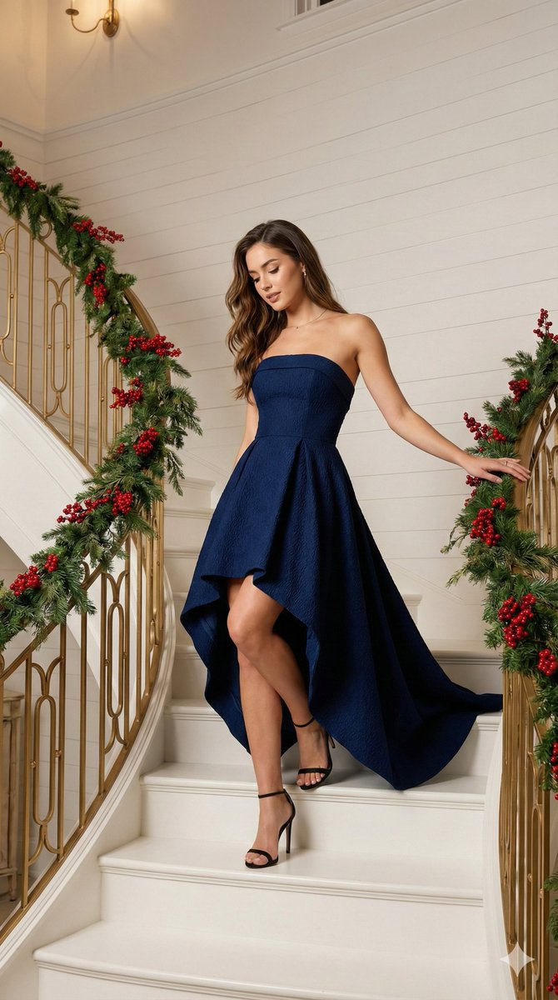
案例1132: "prompt details": {
{ "prompt details": { "subject": { "description": "elegant young woman descending a grand staircase", "appearance": "...
🎨 查看AI提示词
🇨🇳 中文提示词
{ "prompt_details": { "subject": { "description": "优雅的年轻女子走下宏伟的楼梯", "appearance": "深棕色长卷发垂落肩上，低头，表情柔和优雅，皮肤白皙", "pose": "下楼步行，一只手向后伸以扶住栏杆，动作富有动感但姿态端庄" }, "attire": { ...
🇬🇧 English Prompt
{ "prompt_details": { "subject": { "description": "elegant young woman descending a grand staircase", "appearance": "long wavy brunette hair falling over shoulders, looking down with...
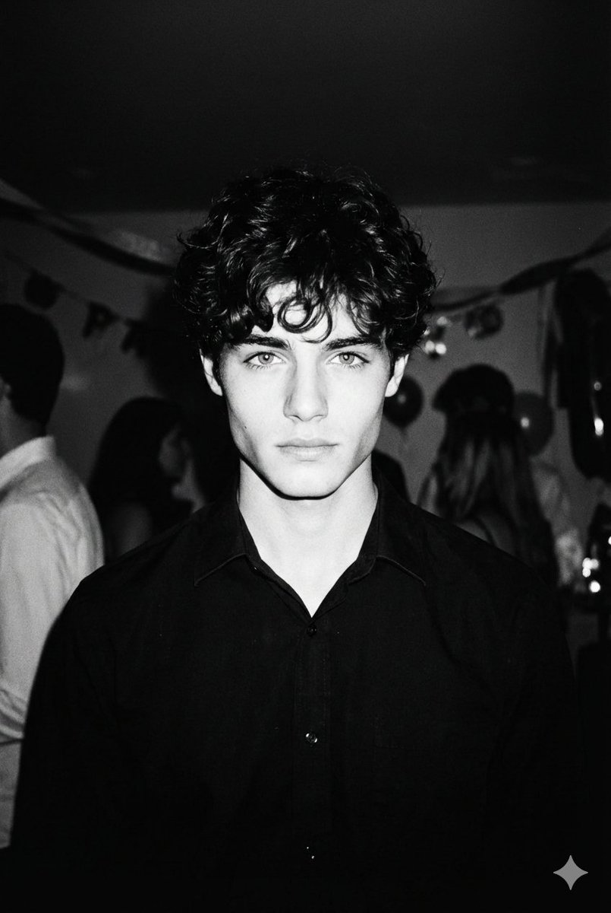
案例1131: High contrast black and white photo taken with a 1990s dispos...
High contrast black and white photo taken with a 1990s disposable camera at a dark house party. A handsome young man...
🎨 查看AI提示词
🇨🇳 中文提示词
高对比黑白照片，使用1990年代的一次性相机在一个昏暗的家庭派对上拍摄。一个英俊的年轻男子，深色卷发和分明的下颌线，正直视镜头。聚焦于眼睛：强烈的浅色虹膜，带着穿透、掠食般的凝视，眼皮略显沉重（妖媚眼），反射着刺眼的相机闪光。他穿着黑色扣襟衬衫。画面颗粒感强、低保真，带有“dark academia”坏男孩美学。（使用我上传的自拍中的脸）
🇬🇧 English Prompt
High-contrast black and white photo taken with a 1990s disposable camera at a dark house party. A handsome young man with dark, curly hair and a sharp jawline is staring directly into the lens. Focus ...
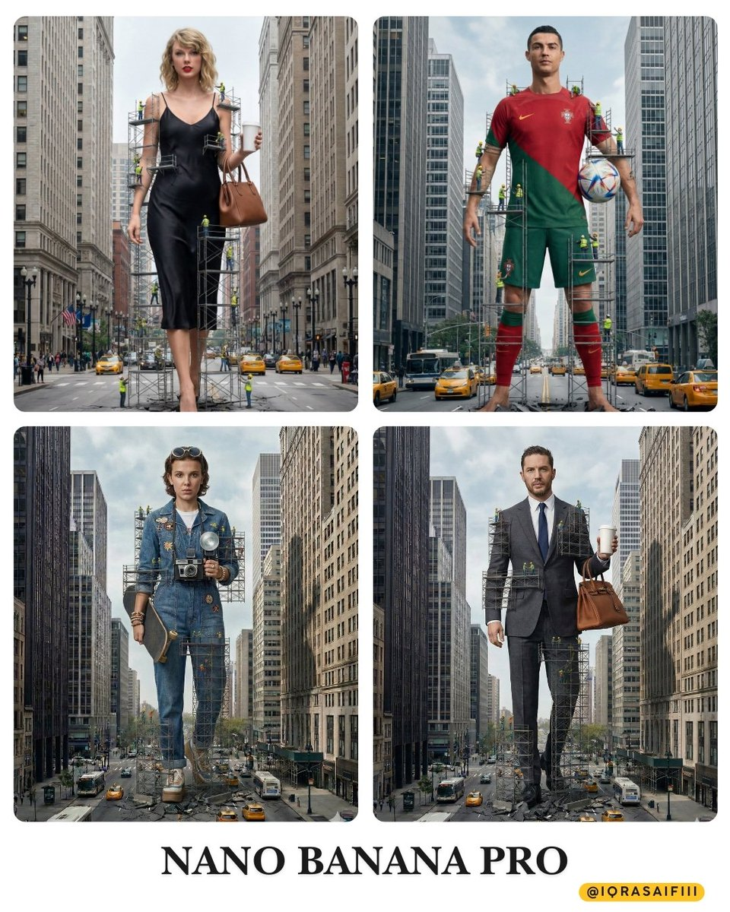
案例1130: "description": "A colossal woman standing in a city street, a...
{ "description": "A colossal woman standing in a city street, appearing to be 'under construction' with scaffolding s...
🎨 查看AI提示词
🇨🇳 中文提示词
{ "description": "一位巨大的女性站在城市街道上，看起来处于“施工中”状态，身体周围被脚手架包围。", "aesthetic": "超现实合成，电影质感，都市幻想。", "subject_details": { "celebrity_likeness": "泰勒·斯威夫特", "features": { "face": "蓝色眼睛，标志性红色...
🇬🇧 English Prompt
{ "description": "A colossal woman standing in a city street, appearing to be 'under construction' with scaffolding surrounding her body.", "aesthetic": "Hyper-realistic composite, cinematic, urba...
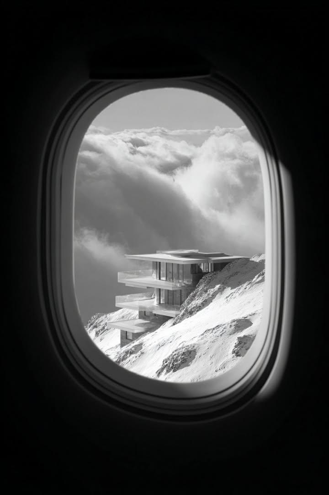
案例1123: a window looking out an airplane and you can see a 4k image o...
a window looking out an airplane and you can see a 4k image of a futuistic, very modern house on top of a mountain wi...
🎨 查看AI提示词
🇨🇳 中文提示词
一个从飞机窗望出去的景象，你可以看到一幅4K分辨率的未来派、极其现代的房子，坐落在雪覆盖的山顶，房子周围除了云朵和雪之外别无他物。拍摄角度略带俯视。照片是黑白的，看起来像用相机拍摄的，照片是直接从窗户向外拍摄的，而不是从侧面拍摄的。
🇬🇧 English Prompt
a window looking out an airplane and you can see a 4k image of a futuistic, very modern house on top of a mountain with snow, nothing is surrounding the house expect clouds, and snow the angle in whic...

案例1117: "production manifest": {
{ "production manifest": { "metadata": { "series id": "CIN FOOD 2025", "aspect ratio": "9:16", "resolution target": "...
🎨 查看AI提示词
🇨🇳 中文提示词
{ "制作清单": { "元数据": { "系列编号": "CIN-FOOD-2025", "纵横比": "9:16", "目标分辨率": "8k_uhd" }, "技术栈": { "硬件": { "相机": "ARRI Alexa 65", "镜头配置": "大画幅电影级定焦镜头" ...
🇬🇧 English Prompt
{ "production_manifest": { "metadata": { "series_id": "CIN-FOOD-2025", "aspect_ratio": "9:16", "resolution_target": "8k_uhd" }, "technical_stack": { "hardware": {...
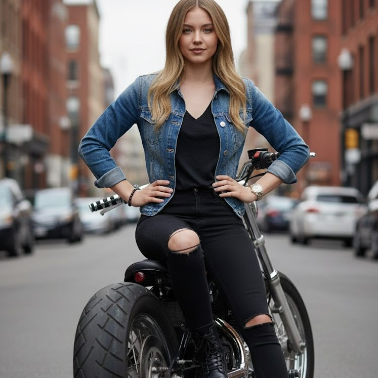
案例1116: A full length portrait of a woman with a biker chic style, si...
A full length portrait of a woman with a biker chic style, sitting sideways on a customized motorcycle on an urban st...
🎨 查看AI提示词
🇨🇳 中文提示词
一张穿着公路风格的女性全身肖像，侧坐在一辆改装的摩托车上，背景为城市街道。她有一头长而波浪状的棕色头发，被风吹拂，直视镜头，嘴唇带有淡淡的微笑，表情自信。她的妆容醒目，眼部轮廓分明。她穿着一件褪色且略微贴身的蓝色牛仔夹克，肩部有隐约徽标，外面搭配一件深色（可能是黑色）的上衣，领口隐约呈V形。膝部有撕裂的黑色牛仔裤，以及黑色摇滚风格的靴子，完成造型。她在摩托车座位上盘坐，双腿交叉，双手交握。手臂上可...
🇬🇧 English Prompt
A full-length portrait of a woman with a biker-chic style, sitting sideways on a customized motorcycle on an urban street. She has long, wavy brown hair, partially blown by the wind, and a direct, con...
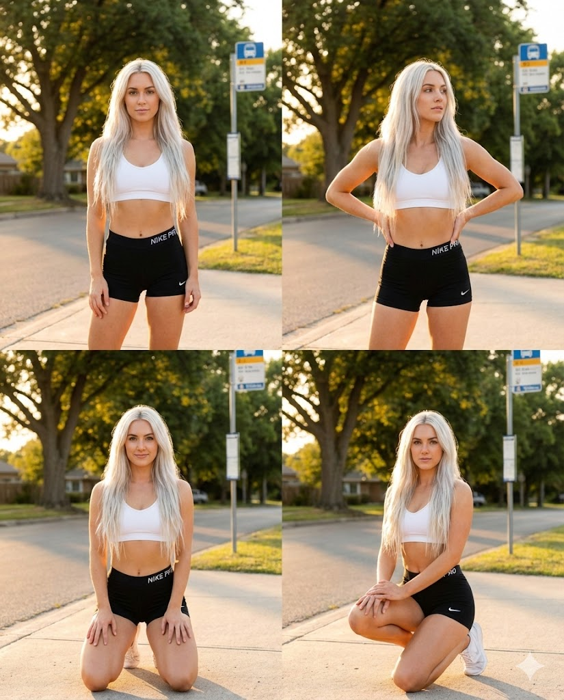
案例1114: "meta": {
{ "meta": { "image quality": "High", "image type": "Photo Set", "aspect ratio": "4:5", "frame count": 4 }, "global co...
🎨 查看AI提示词
🇨🇳 中文提示词
{ "元数据": { "图像质量": "高", "图像类型": "照片集", "长宽比": "4:5", "帧数": 4 }, "全局上下文": { "场景描述": "户外郊区街角，弯曲的人行道、草坪、停放的车辆与背景的住宅。大型绿树构成画面边框。主体身后可见街道标志和公交站牌。", "时间": "黄金时段（下午晚些/傍晚）", ...
🇬🇧 English Prompt
{ "meta": { "image_quality": "High", "image_type": "Photo Set", "aspect_ratio": "4:5", "frame_count": 4 }, "global_context": { "scene_description": "Outdoor suburban street ...
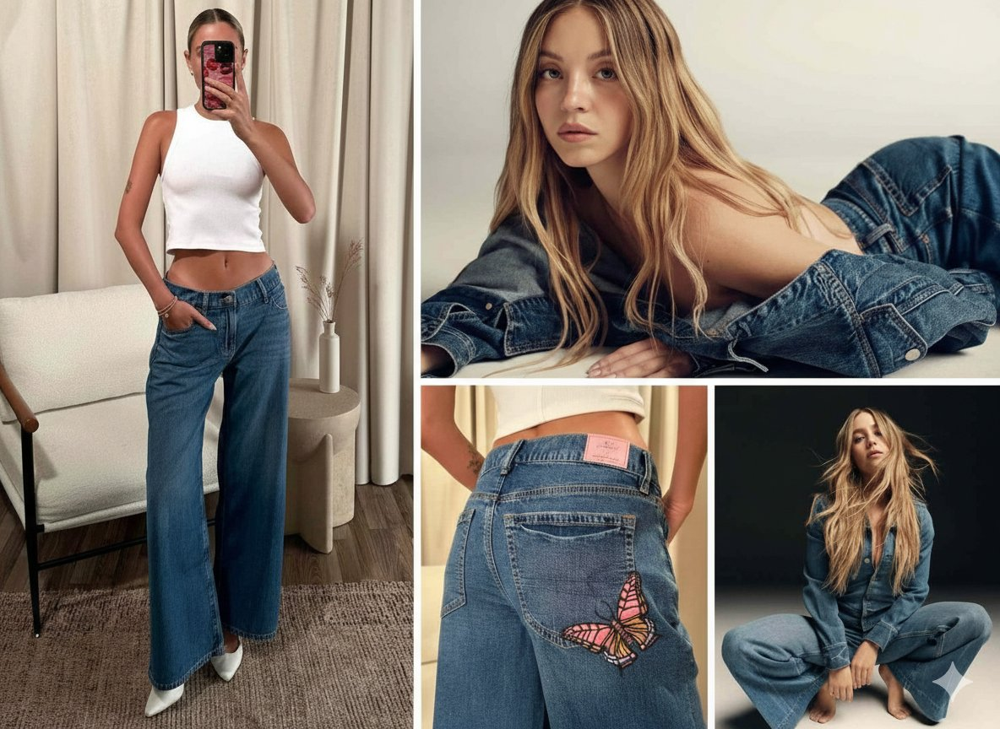
案例1111: "file metadata": {
{ "file metadata": { "filename": "sydney sweeney ae campaign collage.jpg", "category": "High End Fashion Photography"...
🎨 查看AI提示词
🇨🇳 中文提示词
{ "文件元数据": { "文件名": "sydney_sweeney_ae_campaign_collage.jpg", "类别": "高端时尚摄影", "项目": "American Eagle 2024牛仔服饰系列", "明星": "Sydney Sweeney" }, "视觉构图": { "布局类型": "四格不对称拼贴", "色...
🇬🇧 English Prompt
{ "file_metadata": { "filename": "sydney_sweeney_ae_campaign_collage.jpg", "category": "High-End Fashion Photography", "project": "American Eagle Denim Collection 2024", "talent": "S...
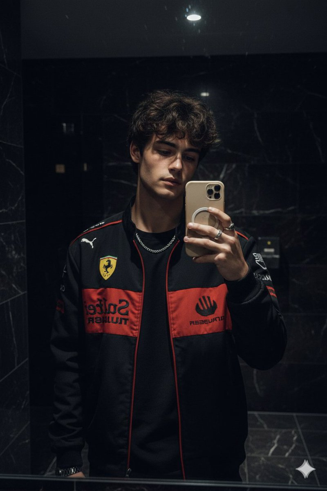
案例1108: Create a hyper realistic mirror selfie of me (use my face fro...
Create a hyper realistic mirror selfie of me (use my face from the uploaded selfie) wearing the same black Ferrari ra...
🎨 查看AI提示词
🇨🇳 中文提示词
为我创建一张超写实的镜子自拍（使用我上传自拍中的脸），穿着同样的黑色法拉利赛车夹克，带有红色和黄色补丁，内搭黑色T恤，戴银色戒指和链子。 我拿着一部带米色MagSafe保护壳的手机，摆姿势于一个昏暗灯光的 现代浴室，深色大理石墙面。光线柔和且富有情绪感， 捕捉与参考图相同的发型、姿势和反射角度——时尚、自信、 电影般的氛围。添加情绪滤镜。
🇬🇧 English Prompt
Create a hyper-realistic mirror selfie of me (use my face from the uploaded selfie) wearing the same black Ferrari racing jacket with red and yellow patches, black t-shirt underneath, silver rings, an...
案例1105: "prompt": "Use the uploaded photo STRICTLY as the facial iden...
{ "prompt": "Use the uploaded photo STRICTLY as the facial identity reference. Preserve the same woman exactly — no c...
🎨 查看AI提示词
🇨🇳 中文提示词
{ "prompt": "严格使用已上传的照片作为面部身份参考。完全保留同一名女性——不得更改面部结构、年龄、肤色或任何决定性特征。\n\n创建一张电影感的9:16纵向超写实高管肖像，表现一位自信、现代的职业女性，站在当代城市露台上，靠近一面简洁反光的玻璃墙。背景为柔和虚化的蓝灰色摩天大楼，营造精致的企业奢华氛围。\n\n灯光为柔和魅力型且讨人喜爱：漫射的自然日光结合细微的补光，产生平滑的高光...
🇬🇧 English Prompt
{ "prompt": "Use the uploaded photo STRICTLY as the facial identity reference. Preserve the same woman exactly — no change to facial structure, age, skin tone, or defining features.\n\nCreate a cine...
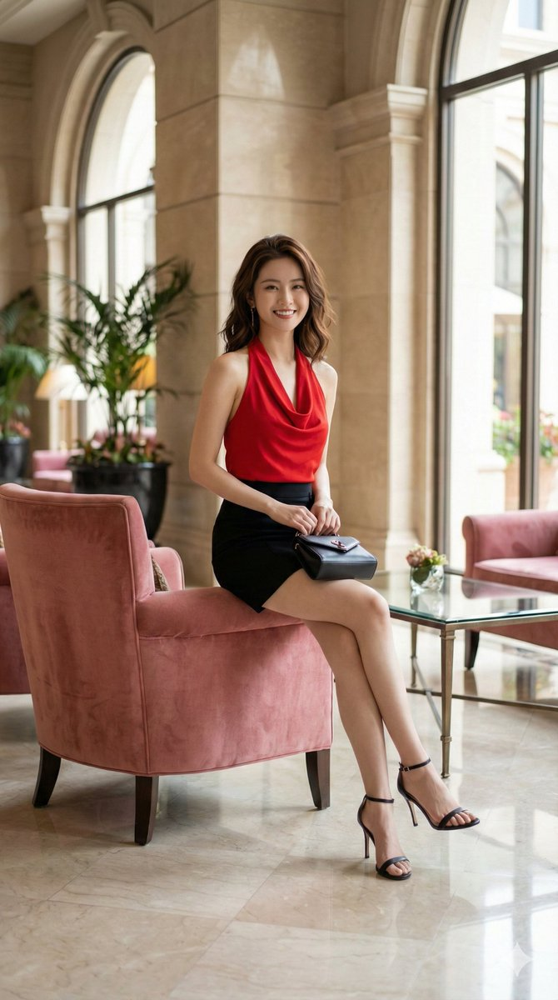
案例1104: Generate a photorealistic medium full body shot of a young wo...
Generate a photorealistic medium full body shot of a young woman sitting on the armrest of a pink velvet armchair in...
🎨 查看AI提示词
🇨🇳 中文提示词
生成一张逼真的中等全身镜头照片，画面为一位年轻女性坐在粉色天鹅绒扶手椅的扶手上，地点在豪华酒店大堂。该女性有及肩的波浪棕发，带着温暖、自信的微笑（保持面部特征一致）。她穿着红色垂领挂脖上衣、黑色紧身迷你裙和黑色绑带高跟鞋，手持一个小黑色手提包。背景有抛光的大理石地面、大型拱形窗户透入自然光、米色柱子和一张玻璃咖啡桌。光线柔和自然，营造出优雅、高档且愉悦的氛围。使用50mm镜头拍摄，高度细节化，编辑...
🇬🇧 English Prompt
Generate a photorealistic medium full-body shot of a young woman sitting on the armrest of a pink velvet armchair in a luxury hotel lobby. The woman has shoulder-length wavy brunette hair and a warm, ...
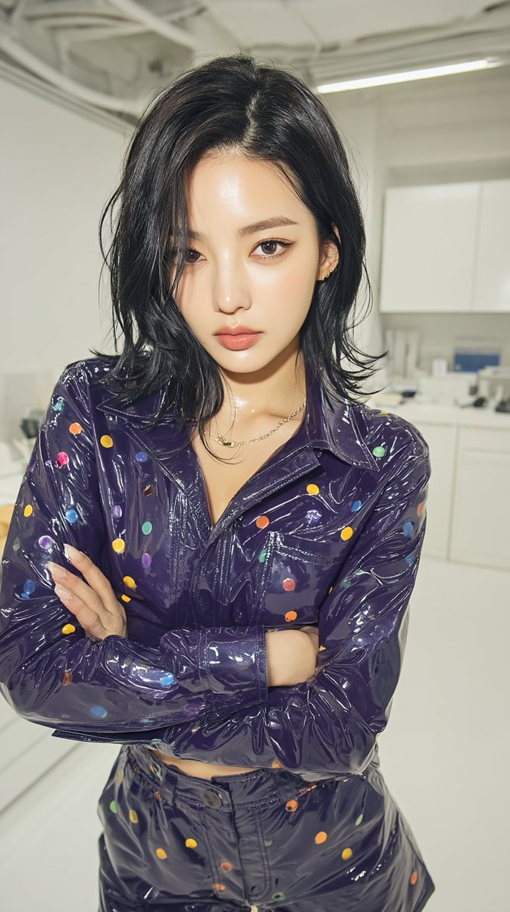
案例1102: Purple Faux Leather School Look with Digital Polka Dots, 2026
Ayle Purple Faux Leather School Look with Digital Polka Dots, 2026 Midjourney prompt on digital canvas X "The boredom...
🎨 查看AI提示词
🇨🇳 中文提示词
Ayle 紫色仿皮学院风造型，配数字波点，2026 数字画布 X 上的 Midjourney 提示词 "安稳空间的无聊。你难道不需要一种像我肩膀一样锐利的张力吗？" 致敬 @3wGleKVoUE76068。 #Ayle #GirouxSang #数字艺术 #X #Y3K #极简主义 #MidjourneyV7
🇬🇧 English Prompt
Ayle Purple Faux Leather School Look with Digital Polka Dots, 2026 Midjourney prompt on digital canvas X "The boredom of a settled space. Don't you need a tension as sharp as my shoulders?" Homage t...
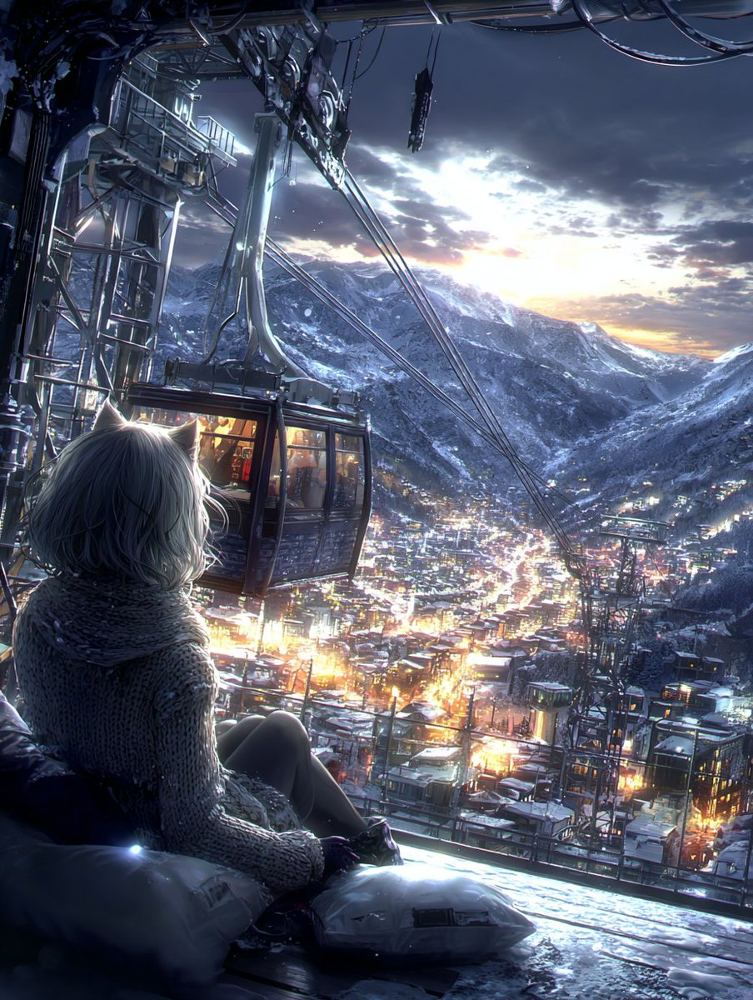
案例1096: Niji journey/Midjourney https://t.co/auxj7GqKph
Niji journey/Midjourney https://t.co/auxj7GqKph
🎨 查看AI提示词
🇨🇳 中文提示词
Niji之旅/Midjourney https://t.co/auxj7GqKph
🇬🇧 English Prompt
Niji journey/Midjourney https://t.co/auxj7GqKph
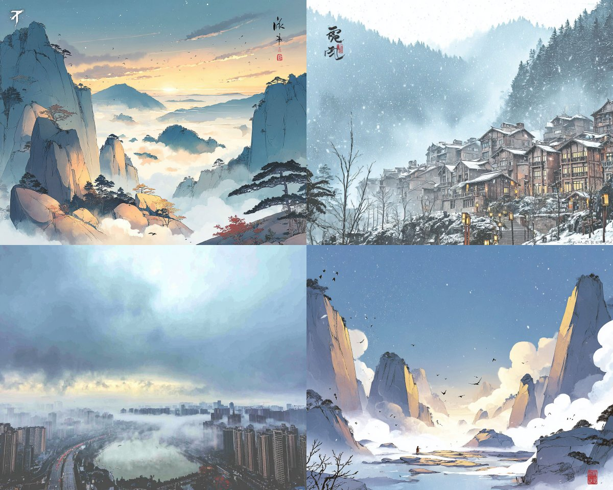
案例1086: A poetic ink and paint style with misty peaks, soft skies, an...
A poetic ink and paint style with misty peaks, soft skies, and quiet scale shifts that move from nature to city witho...
🎨 查看AI提示词
🇨🇳 中文提示词
一种诗意的水墨画风格，带有云雾缭绕的峰峦、柔和的天空，以及从自然过渡到城市而不失平静的静谧尺度转换。 💫 --sref 2977395589 #midjourney #sref #aiart #tischeins https://t.co/vcOQb9V3Fk
🇬🇧 English Prompt
A poetic ink-and-paint style with misty peaks, soft skies, and quiet scale shifts that move from nature to city without losing calm. 💫 --sref 2977395589 #midjourney #sref #aiart #tischeins https://...
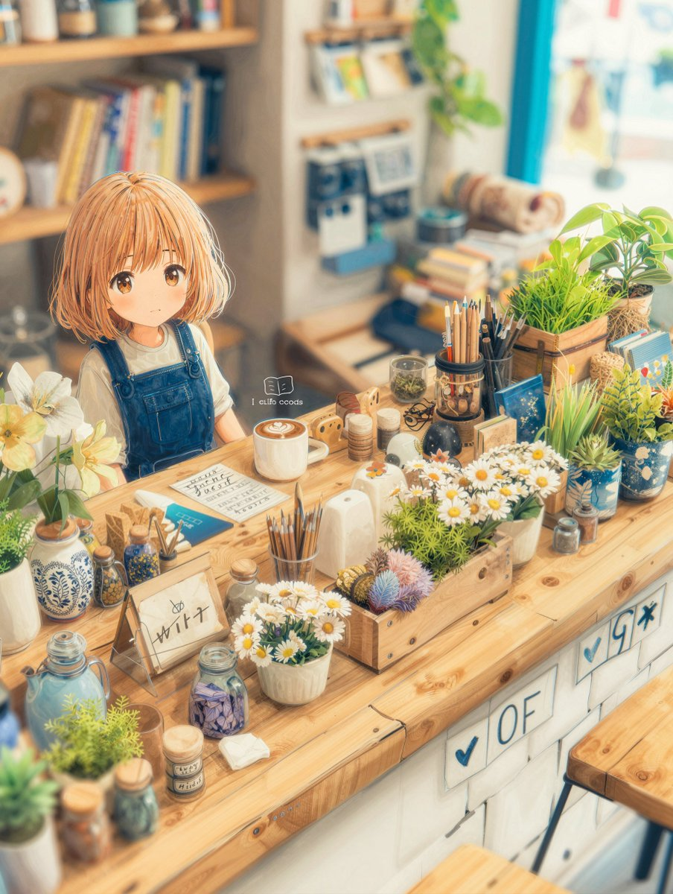
案例1041: A Quiet Moment Behind the Counter
静かな店番 A Quiet Moment Behind the Counter Midjourney https://t.co/zOk6sBZsqd
🎨 查看AI提示词
🇨🇳 中文提示词
安静的店铺值班 柜台后的宁静片刻 Midjourney https://t.co/zOk6sBZsqd
🇬🇧 English Prompt
静かな店番 A Quiet Moment Behind the Counter Midjourney https://t.co/zOk6sBZsqd
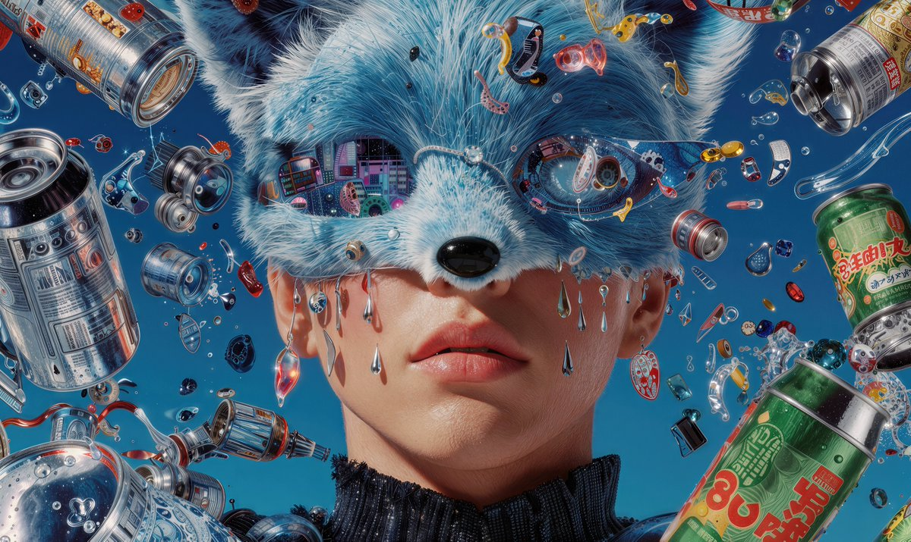
案例1036: She opens her eyes and sees products orbiting her like memori...
She opens her eyes and sees products orbiting her like memories that never decomposed. The algorithm calls it "person...
🎨 查看AI提示词
🇨🇳 中文提示词
她睁开眼睛，看到产品像永不分解的记忆一样环绕着她。 算法把它称为“个性化”，因为在应用商店里“haunting”听起来不好听。 -----⟴ 与 @grok 一起头脑风暴 在 @midjourney 创作 用 @topazlabs 将其放大并润色 https://t.co/v1gURxU2Jx
🇬🇧 English Prompt
She opens her eyes and sees products orbiting her like memories that never decomposed. The algorithm calls it "personalization" because "haunting" sounds bad in the app store. -----⟴ Brainstormed w...
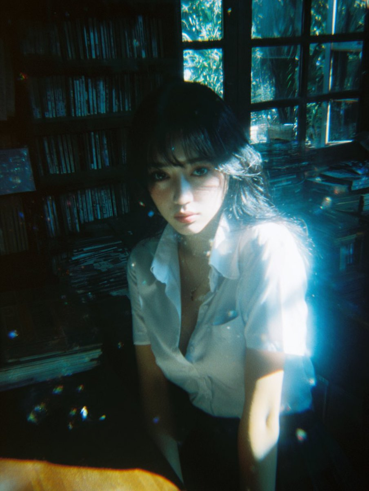
案例1020: ＜Break/ 休憩＞
＜Break/ 休憩＞ ... In the summer, a cool place is a great place to relax! Was there anywhere you could slack off? I gues...
🎨 查看AI提示词
🇨🇳 中文提示词
＜休息/ 休憩＞ ... 在夏天，凉快的地方是放松的好去处！你有去过哪里可以偷懒吗？ 我猜是社团室。😉 问：那么，你觉得她接下来会发生什么？一如既往，告诉我们你的想法！ ... #aiphotography #midjourney ⭐️难忘镜头（系列） https://t.co/qhRWhOiqBP
🇬🇧 English Prompt
＜Break/ 休憩＞ ... In the summer, a cool place is a great place to relax! Was there anywhere you could slack off? I guess the clubroom. 😉 Q: So, what do you think happens to her next? As always, let us ...
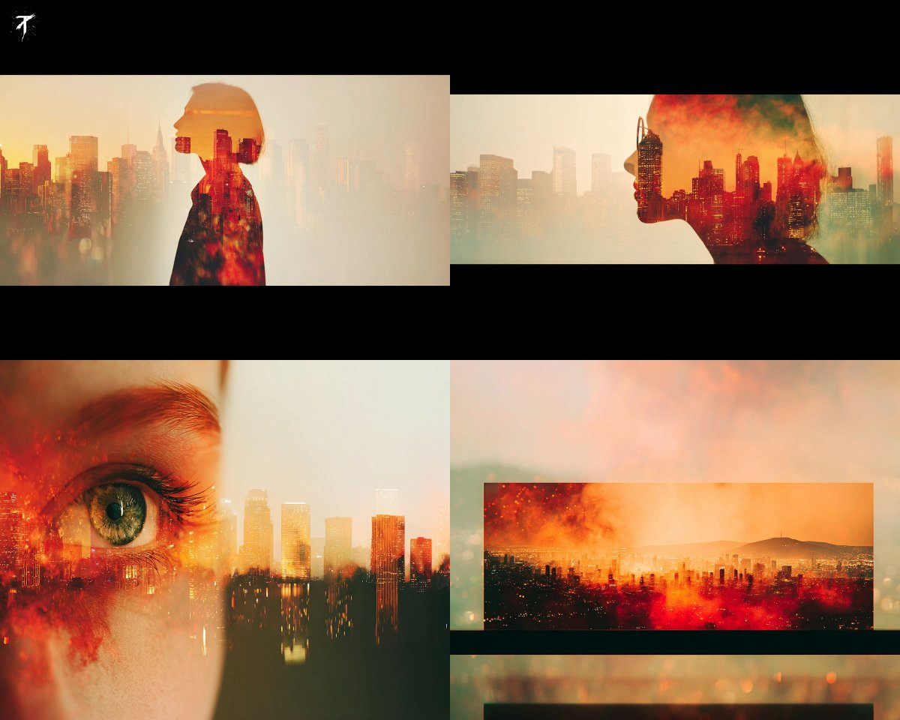
案例1009: Double exposure portraits with glowing cityscapes, warm light...
Double exposure portraits with glowing cityscapes, warm light leaks, and a quiet cinematic mood with this SREF. 💫 sr...
🎨 查看AI提示词
🇨🇳 中文提示词
使用此 SREF 的双重曝光人像，包含发光的城市景观、温暖的漏光，以及静谧的电影氛围。 💫 --sref 1360071822 #midjourney #sref #aiart #tischeins https://t.co/JGbBP0xqRe
🇬🇧 English Prompt
Double exposure portraits with glowing cityscapes, warm light leaks, and a quiet cinematic mood with this SREF. 💫 --sref 1360071822 #midjourney #sref #aiart #tischeins https://t.co/JGbBP0xqRe
案例1007: This woman is quietly thinking whether or not Midjourney V8 w...
This woman is quietly thinking whether or not Midjourney V8 will finally fix feet and hands like everyone else have.....
🎨 查看AI提示词
🇨🇳 中文提示词
这位女士正默默思考 Midjourney V8 是否终于会像其他人那样修复脚和手的问题…… 热门提示在首条评论 🌶️ 附带三个图片示例 https://t.co/wU6QpDMbbd
🇬🇧 English Prompt
This woman is quietly thinking whether or not Midjourney V8 will finally fix feet and hands like everyone else have... Hot prompt in first comment 🌶️ With 3 image examples https://t.co/wU6QpDMbbd

案例953: "global settings": {
{ "global settings": { "resolution": "8K UHD", "aspect ratio": "3:4", "image type": "AI edited hyper realistic commer...
🎨 查看AI提示词
🇨🇳 中文提示词
{ "global_settings": { "resolution": "8K 超高清", "aspect_ratio": "3:4", "image_type": "AI 编辑的超现实商业产品摄影", "camera": { "focus": "超清中心对焦", "depth_of_field": "浅景深，背景柔和衰减", ...
🇬🇧 English Prompt
{ "global_settings": { "resolution": "8K UHD", "aspect_ratio": "3:4", "image_type": "AI-edited hyper-realistic commercial product photography", "camera": { "focus": "ultra-shar...

案例948: "Macro food photography of a crispy martabak telur tearing op...
"Macro food photography of a crispy martabak telur tearing open mid air, thin golden wrapper shattering with a crack,...
🎨 查看AI提示词
🇨🇳 中文提示词
微距美食摄影，一块酥脆的 martabak telur 在半空中撕开，薄薄的金色外皮伴随清脆裂响碎裂，热腾腾的馅料（碎牛肉、葱和鸡蛋）迸裂而出。炸洋葱碎和胡椒屑悬浮在空中，蒸汽可见，油亮的光泽捕捉到光线。温暖的印尼路边摊灯光，钨丝 + 木炭暖色，戏剧性的轮廓光，超高纹理细节（起泡的外皮、分层的内馅）。编辑风格美食画面，浅景深，夜市招牌的散景，Nikon Z9 风格，105mm 微距，快速快门定格，...
🇬🇧 English Prompt
"Macro food photography of a crispy martabak telur tearing open mid-air, thin golden wrapper shattering with a crack, hot filling of minced beef, scallions, and egg bursting outward. Flecks of fried o...

案例938: A photorealistic image, split down the middle. On the left si...
A photorealistic image, split down the middle. On the left side, a small, detailed bone that touches the center divid...
🎨 查看AI提示词
🇨🇳 中文提示词
一幅摄影写实的图像，沿中线对半分割。左侧是一个小而细致的骨头，接触中线，类似狗骨，以清澈的蓝天和云朵为背景。右侧骨头无缝过渡成一个细节丰富、未来感十足且令人惊叹的太空飞船，保持骨头的线条和形状，背景是繁星点点的深空。飞船延伸到右侧边缘，其设计元素暗示对骨头结构的延续。过渡应当平滑，展示一种创造性的融合——骨头的有机形状与飞船的机械结构融为一体，并置于中性背景中以突出这两个主题。
🇬🇧 English Prompt
A photorealistic image, split down the middle. On the left side, a small, detailed bone that touches the center divider, resembling a dog bone set against a clear blue sky with clouds in background. ...
案例903: Create a high quality 3D metallic typography composition of t...
Create a high quality 3D metallic typography composition of the title [MOVIE / SERIES NAME], set against a dark, text...
🎨 查看AI提示词
🇨🇳 中文提示词
为片名 [电影/剧集名称] 创作一件高质量的 3D 金属质感字体构图，置于能反映故事基调、类型与情感氛围的深色纹理背景上，呈现电影级、奢华的视觉冲击力。 每个字母都被雕塑为电影感的造型，将电影或剧集中的不同标志性场景无缝融入字母内部。场景被转化为建筑元素、环境、角色、道具、光线与氛围细节，变成优雅且易读的字形，而非字面拼贴。 每个字母都是一个小型视觉叙事，粉丝能立即辨识，且没有两个字母重复同一...
🇬🇧 English Prompt
Create a high-quality 3D metallic typography composition of the title [MOVIE / SERIES NAME], set against a dark, textured background that reflects the tone, genre, and emotional atmosphere of the stor...

案例896: "project": {
{ "project": { "title": "Hyper Visual Fried Chicken Action Series", "output quality": "8K Ultra HD", "aspect ratio":...
🎨 查看AI提示词
🇨🇳 中文提示词
{ "项目": { "标题": "超视觉炸鸡动作系列", "输出质量": "8K 超高清", "纵横比": "2:3", "风格意图": "高端商业食品摄影", "一致性规则": "每个模块结构相同但保持独特的视觉动态" }, "全局相机与渲染": { "相机视角": "近景到极端微距", "对焦行为": "主体清晰对焦，景深有...
🇬🇧 English Prompt
{ "project": { "title": "Hyper-Visual Fried Chicken Action Series", "output_quality": "8K Ultra-HD", "aspect_ratio": "2:3", "style_intent": "High-end commercial food photography", ...

案例879: "global settings": {
{ "global settings": { "resolution": "8K UHD", "quality": "ultra high", "render style": "AI edited hyper realistic fo...
🎨 查看AI提示词
🇨🇳 中文提示词
{ "全局设置": { "分辨率": "8K 超高清", "质量": "超高", "渲染风格": "AI 编辑的超写实美食摄影", "清晰度": "极致微观细节", "噪点": "无", "压缩": "无损", "光照质量": "工作室控制，电影级", "色彩准确性": "忠实于原图", "对焦": "选择性浅景深", ...
🇬🇧 English Prompt
{ "global_settings": { "resolution": "8K UHD", "quality": "ultra-high", "render_style": "AI-edited hyper-realistic food photography", "sharpness": "extreme micro-detail", "noise"...

案例866: ChatGPT Image 1.5 × Google Veo 3.1
ChatGPT Image 1.5 × Google Veo 3.1 → Nano Banana Pro / GPT Image 1.5 → Copy & Paste the Prompt → View Results Below ⤵...
🎨 查看AI提示词
🇨🇳 中文提示词
ChatGPT 图像 1.5 × Google Veo 3.1 → Nano Banana Pro / GPT-Image 1.5 → 复制并粘贴提示词 → 在下方查看结果 ⤵️ 提示词： 一个超现实的微型城市场景，一只巨大的咖啡杯变形为一家温馨的咖啡馆建筑。咖啡杯构成主要结构，蒸汽如云般升起，陶瓷质感柔和发光，杯盖作为屋顶露台。底层是一间灯光温暖的咖啡馆门面，带玻璃窗、小桌子、凳子、咖啡师...
🇬🇧 English Prompt
ChatGPT Image 1.5 × Google Veo 3.1 → Nano Banana Pro / GPT-Image 1.5 → Copy & Paste the Prompt → View Results Below ⤵️ Prompt: A surreal miniature city scene where a giant coffee cup transforms int...
案例862: A marque historian's documentation board for [VEHICLE] — [MOD...
A marque historian's documentation board for [VEHICLE] — [MODEL / VARIANT / YEAR]. Left section: factory documentatio...
🎨 查看AI提示词
🇨🇳 中文提示词
某品牌历史学家的[车辆]—[型号 / 版本 / 年份]档案展板。 左侧部分：出厂文件，包括原始规格表、生产线照片、同期广告以及车架号码登记表。 中间部分：技术插画，展示动力总成的透视图、悬架几何结构、空气动力学标注及材料说明，周围配以同期赛事成绩或车辆拥有者溯源信息。 右侧部分：车辆置于其标志性环境中——无论是赛道、山路还是林荫大道——并以符合时代感的色彩调校与动感效果捕捉。 ...
🇬🇧 English Prompt
A marque historian's documentation board for [VEHICLE] — [MODEL / VARIANT / YEAR]. Left section: factory documentation including original specification sheet, production line photographs, period adver...

案例832: "resolution": "8K UHD",
{ "resolution": "8K UHD", "aspect ratio": "3:4", "image style": "hyper realistic commercial food photography", "globa...
🎨 查看AI提示词
🇨🇳 中文提示词
{ "resolution": "8K 超高清 (UHD)", "aspect_ratio": "3:4", "image_style": "超写实商业食品摄影", "global_settings": { "quality": "超高细节、清晰对焦、工作室级清晰度", "lighting": "柔和但可控的工作室照明，具有可见高光和飞溅细节", "moti...
🇬🇧 English Prompt
{ "resolution": "8K UHD", "aspect_ratio": "3:4", "image_style": "hyper-realistic commercial food photography", "global_settings": { "quality": "Ultra-high detail, sharp focus, studio-grade...
案例828: Create a hyperrealistic, surreal spherical panorama of [CITY...
Create a hyperrealistic, surreal spherical panorama of [CITY NAME], with its most iconic landmarks and architecture s...
🎨 查看AI提示词
🇨🇳 中文提示词
创建一个超写实、超现实的球形全景，主题为 [CITY NAME]，将其最具标志性的地标和建筑无缝弯曲环绕在类行星表面顶部，形成一个连贯的微型世界。 将光滑、现代的三维字形“[CITY NAME]”自然地整合进城市景观，与环境和谐统一，而不是不自然地悬浮。 画面以自上而下的环绕视角呈现，强调微型星球效果和球面扭曲，同时保持建筑物的清晰可辨。 柔和、自然的日光透过局部多云的天空，投射出细腻、逼真的...
🇬🇧 English Prompt
Create a hyperrealistic, surreal spherical panorama of [CITY NAME], with its most iconic landmarks and architecture seamlessly curving around the top of a planet-like surface, forming a cohesive minia...
案例796: (Paris, PC) Anchor: [Location] :: [Material Concept]::4
(Paris, PC) Anchor: [Location] :: [Material Concept]::4 Morphology: Miniature architectural cityscape of [Location],...
🎨 查看AI提示词
🇨🇳 中文提示词
(巴黎, PC) 锚点: [Location] :: [Material Concept]::4 形态学：对 [Location] 的微型建筑城市景观，整座天际线通过 [Material Concept] 组件的拼装构成，由 [Material Concept] 的组成部分形成的摩天大楼和结构，主题结构工程，超高细节的微缩景观::3 材料物理：将 [Material Concept] 的物理属性应...
🇬🇧 English Prompt
(Paris, PC) Anchor: [Location] :: [Material Concept]::4 Morphology: Miniature architectural cityscape of [Location], entire skyline constructed via the assemblage of [Material Concept] components, sky...
案例786: "prompt details": {
{ "prompt details": { "subject": { "description": "Handsome male trekker, dark wavy hair (no cap), full beard, rugged...
🎨 查看AI提示词
🇨🇳 中文提示词
{ "prompt_details": { "subject": { "description": "英俊的男性徒步者，深色波浪发（无帽），浓密胡须，粗犷的外表", "expression": "放松、平静，享受大自然", "clothing": "绿色格子法兰绒衬衫叠穿在黑色T恤上，黑色多口袋登山裤，蓝色徒步靴，手表，颈部护颈圈" }, ...
🇬🇧 English Prompt
{ "prompt_details": { "subject": { "description": "Handsome male trekker, dark wavy hair (no cap), full beard, rugged appearance", "expression": "Relaxed, calm, enjoying the nature",...
案例772: "Objective": "Create a realistic candid street photograph wit...
{ "Objective": "Create a realistic candid street photograph with cinematic documentary realism", "PersonaDetails": {...
🎨 查看AI提示词
🇨🇳 中文提示词
{ "目标": "创作一张具有电影纪录现实感的真实街头照片", "人物信息": { "主体": { "类型": "年轻女性", "姿势": "站在城市人行横道上，正转身的瞬间被捕捉", "凝视": "直视镜头", "表情": "冷静、内省、略带距离感", "发型": "松散束起，柔软发丝勾勒脸部轮廓", "穿着...
🇬🇧 English Prompt
{ "Objective": "Create a realistic candid street photograph with cinematic documentary realism", "PersonaDetails": { "Subject": { "Type": "Young woman", "Pose": "Standing at a city...

案例741: "image type": "studio fashion photography",
{ "image type": "studio fashion photography", "resolution target": "8K", "aspect ratio": "portrait", "subject": { "en...
🎨 查看AI提示词
🇨🇳 中文提示词
{ "图像类型": "工作室时尚摄影", "分辨率目标": "8K", "纵向比": "竖向", "主体": { "实体": "成年女性", "姿势": { "身体姿态": "单膝跪地", "上半身": "直立，微向前倾", "手臂": { "右手臂": "右臂向前弯曲，手放在抬起的膝盖上", "左...
🇬🇧 English Prompt
{ "image_type": "studio_fashion_photography", "resolution_target": "8K", "aspect_ratio": "portrait", "subject": { "entity": "adult female", "pose": { "body_position": "kneeling o...
案例730: "image generation": {
{ "image generation": { "face": { "preserve original": true, "reference match": true, "description": "Maintain the sa...
🎨 查看AI提示词
🇨🇳 中文提示词
{ "image_generation": { "face": { "preserve_original": true, "reference_match": true, "description": "在所有帧中保持相同的面部结构、肤色、眼形和自然表情，并在每个姿势中保持一致的身份特征。" }, "photo_style": { ...
🇬🇧 English Prompt
{ "image_generation": { "face": { "preserve_original": true, "reference_match": true, "description": "Maintain the same facial structure, skin tone, eye shape, and natural expr...

案例723: "image type": "Hyper realistic cinematic food photography",
{ "image type": "Hyper realistic cinematic food photography", "resolution": "8K", "aspect ratio": "3:4", "camera": {...
🎨 查看AI提示词
🇨🇳 中文提示词
{ "图像类型": "超真实电影感美食摄影", "分辨率": "8K", "纵横比": "3:4", "相机": { "镜头类型": "主打镜头", "角度": "略微低角度并以中心为焦点", "对焦": "前景极致锐利，景深受控", "动作捕捉": "空中瞬间定格，带飞溅动态" }, "照明": { "风格": "电影级影棚灯光",...
🇬🇧 English Prompt
{ "image_type": "Hyper-realistic cinematic food photography", "resolution": "8K", "aspect_ratio": "3:4", "camera": { "shot_type": "Hero shot", "angle": "Slightly low-angle with central...
案例722: "Objective": "Create a joyful, cinematic fantasy photograph s...
{ "Objective": "Create a joyful, cinematic fantasy photograph set in a magical fairytale theme park" "Type": "Young w...
🎨 查看AI提示词
🇨🇳 中文提示词
{ "Objective": "创建一张充满欢乐、具有电影感的奇幻照片，设定于一个魔法的童话主题公园", "Type": "年轻女性", "Pose": "以手臂长度自拍", "Expression": "温暖、快乐的微笑", "Clothing": "浅蓝色连衣裙", "Action": "手持智能手机，面对镜头" , "SecondarySubject": { ...
🇬🇧 English Prompt
{ "Objective": "Create a joyful, cinematic fantasy photograph set in a magical fairytale theme park" "Type": "Young woman", "Pose": "Taking a selfie at arm’s length", "Expression":...
案例688: "style": "monochrome studio portrait",
{ "style": "monochrome studio portrait", "subject": { "identity": "same man as reference", "expression": "calm, confi...
🎨 查看AI提示词
🇨🇳 中文提示词
{ "风格": "单色工作室肖像", "主题": { "身份": "与参考图像中的同一人", "表情": "冷静、自信", "镜头类型": "紧凑中景" }, "灯光": { "布光": "极简", "衰减": "柔和", "氛围": "聚焦于主体", "说明": "深邃的阴影和微妙的渐变塑造脸部" }, "穿搭": ...
🇬🇧 English Prompt
{ "style": "monochrome studio portrait", "subject": { "identity": "same man as reference", "expression": "calm, confident", "shot_type": "tight-medium" }, "lighting": { "setup"...

案例678: "image type": "photographic portrait",
{ "image type": "photographic portrait", "composition": { "framing": "tight close up portrait", "crop": "top of head...
🎨 查看AI提示词
🇨🇳 中文提示词
{ "image_type": "摄影肖像", "composition": { "framing": "紧密特写肖像", "crop": "头顶略微裁切，脸部和上颈部清晰可见", "orientation": "竖向", "camera_angle": "略微低角度，向主体仰视", "subject_position": "居中", "de...
🇬🇧 English Prompt
{ "image_type": "photographic portrait", "composition": { "framing": "tight close-up portrait", "crop": "top of head slightly cropped, face and upper neck fully visible", "orientation"...

案例667: "image type": "photographic portrait",
{ "image type": "photographic portrait", "resolution target": "8K", "subject": { "count": 1, "gender presentation": "...
🎨 查看AI提示词
🇨🇳 中文提示词
{ "image_type": "摄影肖像", "resolution_target": "8K", "subject": { "count": 1, "gender_presentation": "女性化", "face_visibility": "面部完全可见", "expression": "柔和、中性", "head_position":...
🇬🇧 English Prompt
{ "image_type": "photographic portrait", "resolution_target": "8K", "subject": { "count": 1, "gender_presentation": "feminine", "face_visibility": "fully visible", "expression": ...

案例660: Create a hyper realistic, stylish vertical poster featuring a...
Create a hyper realistic, stylish vertical poster featuring a smartphone lying on a table, transformed into a hockey...
🎨 查看AI提示词
🇨🇳 中文提示词
创建一个超写实、时尚的竖版海报，主体是一部放在桌子上的智能手机，已被改造成曲棍球场。屏幕看起来像裂纹的冰，出现深裂缝，而微小的冰球运动员正在进行一场激烈的比赛。使用漫射日光，配以优雅的反射与折射来增强层次感。为真实感，在手机表面添加指纹、污迹和细微划痕等真实细节。打造一个动态透视，采用一个引人入胜的镜头角度，略微倾斜以增添戏剧效果。画面应呈现高质量的 DSLR 照片效果，具备锐利的焦点、丰富的质感...
🇬🇧 English Prompt
Create a hyper-realistic, stylish vertical poster featuring a smartphone lying on a table, transformed into a hockey rink. The screen resembles cracked ice with deep fissures, while tiny hockey player...

案例657: "prompt name": "Lays Spanish Tomato Tango Explosion",
{ "prompt name": "Lays Spanish Tomato Tango Explosion", "description": "Ultra realistic commercial food photography s...
🎨 查看AI提示词
🇨🇳 中文提示词
{ "prompt_name": "Lays_Spanish_Tomato_Tango_Explosion", "description": "极其真实的商业食品摄影，展示一个红色的 Lay’s 零食包装从顶部撕开，位于画面的底部中央。金色带脊纹的薯片在冻结的空中瞬间猛烈向上爆裂。厚厚的红番茄酱在薯片周围动态飞溅，形成弧线和水滴。新鲜的整番茄和带籽的切半番茄在四周飞舞。小碎屑和调味颗粒悬浮...
🇬🇧 English Prompt
{ "prompt_name": "Lays_Spanish_Tomato_Tango_Explosion", "description": "Ultra-realistic commercial food photography showing a red Lay’s snack packet torn open from the top, positioned at the botto...

案例649: Ultra realistic 8K high fashion editorial photograph of a you...
Ultra realistic 8K high fashion editorial photograph of a young woman with fair skin and long wavy chestnut brown hai...
🎨 查看AI提示词
🇨🇳 中文提示词
极其真实的8K高定时尚编辑写真，拍摄对象是一位皮肤白皙、长而波浪状的栗色头发的年轻女子，头发在脸部附近柔和地分开，留下一缕松散的发丝垂落在脸颊附近。 她拥有椭圆形的脸、柔和的下颌线、细腻的闭口微笑、自然粉色的双唇、极简的编辑妆，以及平静而富有表达力的眼神。 她以放松的姿势站立，头微微倾斜，肩部放松，双臂自然下垂，双手在大腿前方轻轻交叠。这个姿态优雅、端庄，具有时尚编辑的气质。 她穿着一件完全...
🇬🇧 English Prompt
Ultra-realistic 8K high-fashion editorial photograph of a young woman with fair skin and long wavy chestnut-brown hair, softly parted with a loose strand falling near her face. She has an oval face, g...

案例648: Epic 8K cinematic fantasy food scene: a colossal crispy fried...
Epic 8K cinematic fantasy food scene: a colossal crispy fried chicken leg rising like a legendary artifact through a...
🎨 查看AI提示词
🇨🇳 中文提示词
史诗级的8K电影风格奇幻美食场景：一根巨大的酥脆炸鸡腿如传说中的神器，在熔融的奶油酱潮涌中升起。酱汁宛如液态云朵，在半空中形成波浪和飞溅。腌黄瓜块、香草叶和调味颗粒在食品宇宙中如同小行星般漂浮。外壳的极致微观纹理——裂纹、气泡与清晰的脆感可见。强烈而戏剧性的照明，深邃的阴影与发光的高光相互映照。生动的金黄色背景，具备电影级深度与大气粒子。超现实且富有神话气质，大胆的超现实广告杰作。
🇬🇧 English Prompt
Epic 8K cinematic fantasy food scene: a colossal crispy fried chicken leg rising like a legendary artifact through a tidal explosion of molten creamy sauce. Sauce behaves like liquid clouds, forming w...
![Create a highly detailed isometric 3D rendering of [LANDMARK]...](../images/tweet-2007082189742379459-1.jpg)
案例643: Create a highly detailed isometric 3D rendering of [LANDMARK]...
Create a highly detailed isometric 3D rendering of [LANDMARK] in architectural visualization style. The building is s...
🎨 查看AI提示词
🇨🇳 中文提示词
在建筑可视化风格中，为 [LANDMARK] 创建一个高度详细的等距3D渲染。建筑物从上方以45度角呈现，展示三面可见的侧面，并具有错综复杂的建筑细节。具备照片级真实纹理，材质包括石材、玻璃、金属或砖。包括基座/地面层，配有微型人物、汽车和景观以体现尺度。背景为干净的白色或浅灰色。专业的建筑渲染，具有柔和的环境阴影落在结构下方。每扇窗、柱、装饰细节和结构元素都应清晰可见。尺寸为1080x1080，...
🇬🇧 English Prompt
Create a highly detailed isometric 3D rendering of [LANDMARK] in architectural visualization style. The building is shown at a 45-degree angle from above, displaying three visible sides with intricate...

案例630: A stylish man wearing a tan suit and sunglasses is featured i...
A stylish man wearing a tan suit and sunglasses is featured in a creative split image, framed by two ornate gold fram...
🎨 查看AI提示词
🇨🇳 中文提示词
一个时髦的男子，身穿米色西装并戴着太阳镜，被置于由两个华丽的金框环绕的创意分屏画面中。上框里，他正从瓶中倒出可口可乐。可乐向下流淌，穿过两框之间的缝隙。下框里，同一个男子、同样身穿米色西装并戴着太阳镜，表情愉悦，随着可乐流入他手中握着的玻璃杯，掀起了动感的飞溅。框后面的背景是一幅柔和模糊的夜景城市景观，灯光下的高楼大厦耸立，似乎在暗示某种意境。
🇬🇧 English Prompt
A stylish man wearing a tan suit and sunglasses is featured in a creative split image, framed by two ornate gold frames. In the top frame, he is pouring Coca-Cola from a bottle. The cola streams downw...

案例628: "task": "image analysis to generation prompt",
{ "task": "image analysis to generation prompt", "resolution": "8K UHD", "orientation": "vertical portrait", "image t...
🎨 查看AI提示词
🇨🇳 中文提示词
{ "task": "图像分析到生成提示", "resolution": "8K 超高清", "orientation": "竖向肖像", "image_type": "户外人像摄影照片", "subject": { "gender": "女性", "age_appearance": "看起来是年轻成人", "skin_tone": "浅色至白皙肤色",...
🇬🇧 English Prompt
{ "task": "image_analysis_to_generation_prompt", "resolution": "8K UHD", "orientation": "vertical portrait", "image_type": "outdoor portrait photograph", "subject": { "gender": "female",...

案例623: A charcuterie style board presents JAPAN as an edible sculptu...
A charcuterie style board presents JAPAN as an edible sculpture: • Letters carved from compact sushi rice blocks wrap...
🎨 查看AI提示词
🇨🇳 中文提示词
一个熟食拼盘风格的拼盘将日本呈现为可食用的雕塑： • 字母由紧实的寿司米块雕刻而成，并以海苔边饰包裹 • 河流和湖泊以光泽的酱油–味淋浓缩汁绘成 • 山脉轮廓以光滑的山葵-牛油果慕斯挤出（突出富士山峰顶） • 海岸线撒上七味唐辛子调味粉 再添一个标志性红色鸟居门形竹签装饰，锚定构图。 偏振的工作室柔光箱照明，50毫米定焦，f/4，浅景深；保留碎屑、刀痕和木纹。 使用 Cinema 4D + Oct...
🇬🇧 English Prompt
A charcuterie-style board presents JAPAN as an edible sculpture: • Letters carved from compact sushi-rice blocks wrapped with nori trim • Rivers and lakes painted in glossy soy-mirin reduction • Mount...

案例622: "id": "pineapple beach v2",
[ { "id": "pineapple beach v2", "type": "photorealistic advertising shot", "subject": { "item": "pineapple juice bott...
🎨 查看AI提示词
🇨🇳 中文提示词
[ { "id": "pineapple_beach_v2", "type": "照片级写实广告镜头", "subject": { "item": "菠萝汁瓶", "label_text": "NFC 菠萝汁", "pose": "略微向前倾斜" }, "environment": { "location"...
🇬🇧 English Prompt
[ { "id": "pineapple_beach_v2", "type": "photorealistic advertising shot", "subject": { "item": "pineapple juice bottle", "label_text": "NFC Pineapple Juice", "pose": "...

案例621: "type": "image generation prompt",
{ "type": "image generation prompt", "style": "ultra wide angle, aerial portrait, contemporary studio photography", "...
🎨 查看AI提示词
🇨🇳 中文提示词
{ "type": "图像生成提示", "style": "超广角，空中肖像，当代工作室摄影", "identity_preservation": { "use_reference_image": true, "strict_identity_lock": true, "alter_face": false, "notes": "保留参考图像中女性面部特...
🇬🇧 English Prompt
{ "type": "image_generation_prompt", "style": "ultra-wide angle, aerial portrait, contemporary studio photography", "identity_preservation": { "use_reference_image": true, "strict_identi...
![A luxury [BRAND] brand advertisement featuring three stylish...](../images/tweet-2004219626897465419-1.jpg)
案例617: A luxury [BRAND] brand advertisement featuring three stylish...
A luxury [BRAND] brand advertisement featuring three stylish [ATHLETES / MODELS / PEOPLE] arranged in a single horizo...
🎨 查看AI提示词
🇨🇳 中文提示词
一则奢侈品牌 [BRAND] 的广告，呈现三位时尚的 [ATHLETES / MODELS / PEOPLE]，水平排布成单行的 1×3 网格，每位在各自独立的建筑窗框中摆姿势。 构图与取景： 3个竖向窗格水平并排排列，每个角色以腰部以上的半身镜头呈现，画面完全位于画框内，手部和道具自然超出画框的底边/侧边，腿部或下半身不可见，手部解剖正确，无缺指、无畸形。三个画格必须全部可见，顶部和底部不得裁...
🇬🇧 English Prompt
A luxury [BRAND] brand advertisement featuring three stylish [ATHLETES / MODELS / PEOPLE] arranged in a single horizontal 1×3 grid, each posed in their own separate architectural window frame. Compos...

案例616: "image type": "Photorealistic portrait",
{ "image type": "Photorealistic portrait", "resolution": "8K UHD", "aspect ratio": "Vertical", "camera": { "framing":...
🎨 查看AI提示词
🇨🇳 中文提示词
{ "image_type": "照片级写实肖像", "resolution": "8K 超高清", "aspect_ratio": "竖向", "camera": { "framing": "中景", "crop": "上半身到大腿中部可见", "angle": "略高于眼平线", "perspective": "正对正脸，向左微微偏转", ...
🇬🇧 English Prompt
{ "image_type": "Photorealistic portrait", "resolution": "8K UHD", "aspect_ratio": "Vertical", "camera": { "framing": "Medium shot", "crop": "Upper body to mid-thigh visible", "ang...

案例614: "image type": "AI enhanced photographic portrait",
{ "image type": "AI enhanced photographic portrait", "resolution target": "8K Ultra HD", "aspect ratio": "vertical (p...
🎨 查看AI提示词
🇨🇳 中文提示词
{ "image_type": "AI增强的摄影肖像", "resolution_target": "8K超高清", "aspect_ratio": "竖屏（纵向构图）", "subject": { "gender_presentation": "女性呈现", "age_range_estimate": "年轻成人", "skin_tone": "白皙至偏白...
🇬🇧 English Prompt
{ "image_type": "AI-enhanced photographic portrait", "resolution_target": "8K Ultra HD", "aspect_ratio": "vertical (portrait orientation)", "subject": { "gender_presentation": "female-pres...

案例613: Do this for Pineapple Pizza:
Do this for Pineapple Pizza: <instruction Input A: user uploads an image or shares name of dish Logic Identify the hi...
🎨 查看AI提示词
🇨🇳 中文提示词
为菠萝披萨做这个：<instruction>
输入 A：用户上传图片或分享菜名
逻辑 识别历史发明者（例如 Raffaele Esposito 或 Henri Charpentier）及确切的起源年份。
任务：一张极其写实的4:5 宏观照片，展示一个超大尺寸、打开的古董烹饪法典，安放在深色天鹅绒博物馆底座上。
左页（活体微景观）：
书的左侧被挖空，像一个秘密暗格。内部是一个令人叹为观止的3D...
🇬🇧 English Prompt
Do this for Pineapple Pizza: <instruction>
Input A: user uploads an image or shares name of dish
Logic Identify the historical inventor (e.g., Raffaele Esposito or Henri Charpentier) and the exact y...
Do this for Pineapple Pizza: <instruction Input A: user uploads an image or shares name of dish Logic Identify the hi...
🎨 查看AI提示词
🇨🇳 中文提示词
为菠萝披萨做这个：<instruction> 输入 A：用户上传图片或分享菜名 逻辑 识别历史发明者（例如 Raffaele Esposito 或 Henri Charpentier）及确切的起源年份。 任务：一张极其写实的4:5 宏观照片，展示一个超大尺寸、打开的古董烹饪法典，安放在深色天鹅绒博物馆底座上。 左页（活体微景观）： 书的左侧被挖空，像一个秘密暗格。内部是一个令人叹为观止的3D...
🇬🇧 English Prompt
Do this for Pineapple Pizza: <instruction> Input A: user uploads an image or shares name of dish Logic Identify the historical inventor (e.g., Raffaele Esposito or Henri Charpentier) and the exact y...

案例612: "image type": "fashion portrait photography",
{ "image type": "fashion portrait photography", "resolution target": "8K Ultra HD", "aspect ratio": "vertical (approx...
🎨 查看AI提示词
🇨🇳 中文提示词
{ "image_type": "时尚肖像摄影", "resolution_target": "8K 超高清", "aspect_ratio": "竖向（约2:3）", "camera": { "shot_type": "中近景肖像", "camera_angle": "略微倾斜，主体向右三刻位转身", "eye_level": "同平视线", "f...
🇬🇧 English Prompt
{ "image_type": "fashion portrait photography", "resolution_target": "8K Ultra HD", "aspect_ratio": "vertical (approximately 2:3)", "camera": { "shot_type": "medium close-up portrait", ...

案例608: "image type": "studio fashion portrait photography",
{ "image type": "studio fashion portrait photography", "resolution target": "8K ultra high definition", "aspect ratio...
🎨 查看AI提示词
🇨🇳 中文提示词
内容翻译：影像类型为工作室时尚人像摄影；分辨率目标为8K 超高清；纵向竖屏。构图为中景人像，裁切从头部到胸部中部，主体居中略偏右，镜头角度为视线水平。姿势为身体向左三分之二转身，头部朝向相机，一臂抬起并放置在头部后方或头顶，另一臂自然下垂放松。主体为女性年轻成人，肤色从浅到中等，表情为中性到略显严肃，直视相机，传达自信与从容。五官细节为椭圆形脸、肤质平滑均匀，妆容以强化的眼线与睫毛膏为主，唇色深沉...
🇬🇧 English Prompt
{ "image_type": "studio fashion portrait photography", "resolution_target": "8K ultra high definition", "aspect_ratio": "portrait (vertical)", "composition": { "framing": "medium portrait"...

案例606: "canvas": {
{ "canvas": { "width": 1200, "height": 1200 }, "subject": { "gender": "female", "age range": "early to mid 20s", "eth...
🎨 查看AI提示词
🇨🇳 中文提示词
{ "canvas": { "width": 1200, "height": 1200 }, "subject": { "gender": "female", "age_range": "early to mid 20s", "ethnicity": "fair-skinned, European appearance", "hair":...
🇬🇧 English Prompt
{ "canvas": { "width": 1200, "height": 1200 }, "subject": { "gender": "female", "age_range": "early to mid 20s", "ethnicity": "fair-skinned, European appearance", "hair":...

案例605: Scene: type: "battle scene" camera angle: "dramatic dutch ang...
Scene: type: "battle scene" camera angle: "dramatic dutch angle, tilted composition" lens: type: "super wide angle le...
🎨 查看AI提示词
🇨🇳 中文提示词
场景：类型: "战斗场景" 摄像头角度: "戏剧性的荷兰角度，画面倾斜构图" 镜头类型: "超广角镜头" 效果: - "极端透视" - "前景、中景、背景之间的强烈空间压缩" 角色：身份：种族: "日本" 性别: "女孩" 发型: "中长发" 穿着风格: "风吹、华丽、时尚 Yumekawa 风格" 姿势描述: "大胆、动态的动作姿态" 身体朝向: "以倾斜表达的力量感" 手势: 右手: 手势: ...
🇬🇧 English Prompt
{ "type": "image generation prompt", "style": "photorealistic cinematic street photography, documentary aesthetic", "resolution": "ultra-high resolution", "identity_preservation": { "use_r...

案例598: GPT Image 1.5 on Higgsfield keeps multi shot scenes consisten...
GPT Image 1.5 on Higgsfield keeps multi shot scenes consistent, turning simple moments into clean, well structured vi...
🎨 查看AI提示词
🇨🇳 中文提示词
GPT Image 1.5 在 Higgsfield 上保持多镜头场景的一致性，将简单的瞬间转化为干净、结构良好的视觉效果。 使用以下提示👇 极简工作室摄影：一位女性端正地坐在简单的木椅上，正对右侧侧脸。她身穿橄榄绿色剪裁西装，裤子为直筒裤，穿着平底便鞋，双手端放在腿上，身体笔直而从容。背景为中性白色无缝背景，柔和的工作室灯光在地板投下柔和的阴影。墙上偏左偏后挂着一幅大型蓝色技术蓝图海报，展...
🇬🇧 English Prompt
GPT Image 1.5 on Higgsfield keeps multi-shot scenes consistent, turning simple moments into clean, well-structured visuals . Use prompt below 👇 Minimalist studio photograph of a woman seated in p...

案例597: "image type": "studio portrait",
{ "image type": "studio portrait", "composition": { "framing": "tight head and shoulders close up", "camera angle": "...
🎨 查看AI提示词
🇨🇳 中文提示词
{ "image_type": "工作室肖像", "composition": { "framing": "紧凑的头肩近景", "camera_angle": "眼平", "orientation": "纵向", "symmetry": "近乎完美的中心对称", "focus": "聚焦在眼睛和面部特征上清晰", "depth_of_fiel...
🇬🇧 English Prompt
{ "image_type": "studio portrait", "composition": { "framing": "tight head-and-shoulders close-up", "camera_angle": "eye-level", "orientation": "vertical", "symmetry": "near-perfec...

案例596: "prompt": "Create a hyper realistic, ultra detailed cinematic...
{ "prompt": "Create a hyper realistic, ultra detailed cinematic photo featuring a MINIATURE version of the person fro...
🎨 查看AI提示词
🇨🇳 中文提示词
{ "prompt": "创建一个超现实、极度详细的电影感照片， featuring 来自提供参考图像的人的MINIATURE版本（保留面部相似性、肤色、发型和整体身份）。小人物正放松地坐在一个开启的复古硬壳行李箱内，像小床一样使用。行李箱放在明亮房间的干净石地/瓷砖地板上，强烈自然日光在地板上投下柔和的矩形窗阴影。\n\n仅变量：\n1) Character: 使用用户的参考照片作为人物的面...
🇬🇧 English Prompt
{ "prompt": "Create a hyper-realistic, ultra detailed cinematic photo featuring a MINIATURE version of the person from the provided reference image (preserve facial likeness, skin tone, hairstyle, a...

案例592: Surreal diorama emerging from an open vintage book of "Brave...
Surreal diorama emerging from an open vintage book of "Brave New World" by Aldous Huxley: the pages form a futuristic...
🎨 查看AI提示词
🇨🇳 中文提示词
来自阿道斯·赫胥黎《美丽新世界》打开的一本老旧书籍中浮现出的一场超现实 Diorama：书页形成一个未来派的孵化实验室，传送带上的发光试管里有胚胎形体，穿着白色实验室制服的工人操作机器，墙上有一个巨大的全视之眼符号，传送带通过隐藏的机制运转，冷蓝色霓虹灯照明，超写实的微型雕塑，临床且诡异的氛围，仿佛真实照片。
🇬🇧 English Prompt
Surreal diorama emerging from an open vintage book of "Brave New World" by Aldous Huxley: the pages form a futuristic hatching laboratory with rows of glowing test tubes containing embryonic figures o...

案例591: higgsfield https://t.co/JoqYJ1mqeI GPTImage 1.5
higgsfield https://t.co/JoqYJ1mqeI GPTImage 1.5 GPT Image 1.5 just launched on Higgsfield — OpenAI’s structured, reas...
🎨 查看AI提示词
🇨🇳 中文提示词
#higgsfield https://t.co/JoqYJ1mqeI GPTImage 1.5 GPT Image 1.5 刚在 Higgsfield 上发布——OpenAI 的结构化、面向推理的模型，专为图表、清晰视觉、规划和日常智能而设计。 它的目标在于 clarity 而非风格，现在成为 Higgsfield 创作者工具包的一部分。
🇬🇧 English Prompt
#higgsfield https://t.co/JoqYJ1mqeI GPTImage 1.5 GPT Image 1.5 just launched on Higgsfield — OpenAI’s structured, reasoning-focused model built for diagrams, clean visuals, planning, and everyday in...

案例587: A 3x3 grid storyboard contact sheet comprised of nine candid,...
A 3x3 grid storyboard contact sheet comprised of nine candid, cinematic movie stills showing a continuous sequence of...
🎨 查看AI提示词
🇨🇳 中文提示词
一个由九张抓拍组成的3x3网格故事板联系人照片，展示九张抓拍的电影感镜头，呈现一个青年男子的连续序列，年龄大约在20-25岁之间。他有蓬乱的棕色头发，面部表情青春、富有表现力，刮胡子。九个画面中他始终穿着一件棕色短袖亚麻扣扣衬衫，在家庭晚餐时坐在木质餐桌旁。画面展现了多样的自然动作：在热闹地讲话时用手势、笑、从大盘子里吃千层面、专心倾听、微笑。环境是温暖舒适的家中餐厅，背景可见一个装有瓷器的木质橱...
🇬🇧 English Prompt
A 3x3 grid storyboard contact sheet comprised of nine candid, cinematic movie stills showing a continuous sequence of a young man, approximately 20-25 years old. He has tousled brown hair and a youthf...

案例584: "render goal": "Create a hyper realistic, cinematic portrait...
{ "render goal": "Create a hyper realistic, cinematic portrait with a rugged outdoor adventure aesthetic", "subject":...
🎨 查看AI提示词
🇨🇳 中文提示词
"render goal": "Create a hyper realistic, cinematic portrait with a rugged outdoor adventure aesthetic", "subject": { "gender": "male", "age_range": "mid-to-late 20s", "appearance": { ...
🇬🇧 English Prompt
{ "render_goal": "Create a hyper-realistic, cinematic portrait with a rugged outdoor adventure aesthetic", "subject": { "gender": "male", "age_range": "mid-to-late 20s", "appearance": ...